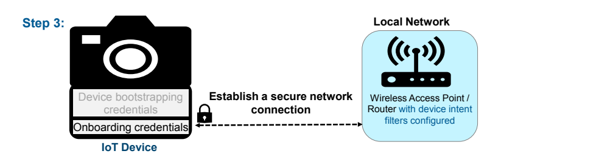

NIST IR 8350 日本語訳
英語タイトル : Foundational Concepts in Trusted IoT Device Network-Layer Onboarding: Enhancing Internet Protocol-Based IoT Device and Network Security日本語タイトル : 信頼できる IoT デバイスのネットワーク層オンボーディングの基礎概念：インターネットプロトコルベースの IoT デバイスとネットワークのセキュリティ強化
公開日 : 2025-11-25
原文URL : https://csrc.nist.gov/pubs/ir/8350/final
翻訳編集 : 自動生成（有志による非公式の日本語訳）, 原文取得日 : 2026-10-31, 訳文 : 355 / 356 ブロック
[要約] NIST IR 8350 は、IoT デバイスにネットワーク認証情報を提供するための手順であるネットワーク層オンボーディングについて、信頼できるネットワーク層オンボーディングの定義を提案する報告書です。読者に信頼できるネットワーク層オンボーディングを紹介し、その機能、特性、利点を説明するとともに、デバイスのライフサイクル全体を通じて IoT デバイスとネットワークを保護するうえでオンボーディングが果たしうる役割を説明します。さまざまなオンボーディング機能を説明して明確にする共通の用語を提供し、汎用的な信頼できるオンボーディングのプロセス、オンボーディングの機能上の役割と責任、デバイスのライフサイクル管理のうちオンボーディングに関連する側面を論じます。また、デバイスのライフサイクル全体を通じてデバイスを保護するセキュリティ機能を、オンボーディングがどのように強化できるかを説明します。
NIST Internal Report
NIST 内部報告書
NIST IR 8350
NIST IR 8350
Foundational Concepts in Trusted IoT Device Network-Layer Onboarding
信頼できるIoTデバイスのネットワーク層オンボーディングの基礎概念
Enhancing Internet Protocol-Based IoT Device and Network Security
インターネットプロトコルベースのIoTデバイスとネットワークのセキュリティ強化
Final
最終版
Susan Symington
Susan Symington
Blaine Mulugeta
Blaine Mulugeta
William Polk*
William Polk*
Murugiah Souppaya*
Murugiah Souppaya*
Jeffrey Marron
Jeffrey Marron
This publication is available free of charge from: https://doi.org/10.6028/NIST.IR.8350
本刊行物は次のサイトから無償で入手できます: https://doi.org/10.6028/NIST.IR.8350
NIST Internal Report
NIST 内部報告書
NIST IR 8350
NIST IR 8350
Foundational Concepts in Trusted IoT Device Network-Layer Onboarding
信頼できるIoTデバイスのネットワーク層オンボーディングの基礎概念
Enhancing Internet Protocol-Based IoT Device and Network Security
インターネットプロトコルベースのIoTデバイスとネットワークのセキュリティ強化
Final
最終版
William Polk*
William Polk*
Jeffrey Marron
Jeffrey Marron
Applied Cybersecurity Division Information Technology Laboratory
応用サイバーセキュリティ部門 情報技術研究所
Susan Symington
Susan Symington
Blaine Mulugeta
Blaine Mulugeta
The MITRE Corporation McLean, VA
The MITRE Corporation McLean, VA
Murugiah Souppaya*
Murugiah Souppaya*
Computer Security Division Information Technology Laboratory
コンピュータセキュリティ部門 情報技術研究所
Retired NIST Author*
NIST を退職した著者*
*Former NIST employee; all work for this publication was done while at NIST.
*NIST の元職員。本刊行物に関するすべての作業は NIST 在籍中に行われました。
This publication is available free of charge from: https://doi.org/10.6028/NIST.IR.8350
本刊行物は次のサイトから無償で入手できます: https://doi.org/10.6028/NIST.IR.8350
November 2025
2025 年 11 月
［米国商務省の紋章。公的な標章のため、この非公式サイトには掲載していません。原本 PDF を参照してください。］
U.S. Department of Commerce Howard Lutnick, Secretary
米国商務省 Howard Lutnick 長官
National Institute of Standards and Technology
国立標準技術研究所
Craig Burkhardt, Acting Under Secretary of Commerce for Standards and Technology and Acting NIST Director
Craig Burkhardt 商務次官代行（標準・技術担当）兼 NIST 所長代行
Certain equipment, instruments, software, or materials, commercial or non-commercial, are identified in this paper in order to specify the experimental procedure adequately. Such identification does not imply recommendation or endorsement of any product or service by NIST, nor does it imply that the materials or equipment identified are necessarily the best available for the purpose.
本書では、実験手順を適切に特定するために、商用・非商用を問わず、特定の機器、計器、ソフトウェア、または資料を明示している場合があります。こうした明示は、NIST がいかなる製品やサービスも推奨または支持していることを意味するものではなく、明示された資料や機器がその目的に最適であることを意味するものでもありません。
There may be references in this publication to other publications currently under development by NIST in accordance with its assigned statutory responsibilities. The information in this publication, including concepts and methodologies, may be used by federal agencies even before the completion of such companion publications. Thus, until each publication is completed, current requirements, guidelines, and procedures, where they exist, remain operative. For planning and transition purposes, federal agencies may wish to closely follow the development of these new publications by NIST.
本刊行物には、NIST が法令で定められた責務に従って現在策定中の他の刊行物への言及が含まれる場合があります。本刊行物の情報は、概念や方法論を含め、そうした関連刊行物が完成する前であっても、連邦機関が利用してもよいです。したがって、各刊行物が完成するまでは、現行の要件、ガイドライン、手順が存在する場合は、それらが引き続き有効です。計画や移行のために、連邦機関は NIST によるこれらの新しい刊行物の策定を注意深く見守るべきです。
Organizations are encouraged to review all draft publications during public comment periods and provide feedback to NIST. Many NIST cybersecurity publications, other than the ones noted above, are available at https://csrc.nist.gov/publications.
各組織は、公開意見募集期間中にすべてのドラフト刊行物を確認し、NIST にフィードバックを提供することが推奨されています。上記で述べたものを除く多くの NIST サイバーセキュリティ刊行物は https://csrc.nist.gov/publications で入手できます。
NIST Technical Series Policies Copyright, Use, and Licensing Statements NIST Technical Series Publication Identifier Syntax
NIST 技術シリーズのポリシー 著作権、利用、およびライセンスに関する声明 NIST 技術シリーズ刊行物の識別子の構文
Publication History Approved by the NIST Editorial Review Board on 2025-09-30
刊行の履歴 2025-09-30 に NIST 編集審査委員会により承認
How to Cite this NIST Technical Series Publication Polk W, Marron J, Souppaya M, Symington S, Mulugeta B (2025) Foundational Concepts in Trusted IoT Device Network-Layer Onboarding. (National Institute of Standards and Technology, Gaithersburg, MD), NIST Internal Report (IR) NIST IR 8350. https://doi.org/10.6028/NIST.IR.8350
この NIST 技術シリーズ刊行物の引用方法 Polk W, Marron J, Souppaya M, Symington S, Mulugeta B (2025) Foundational Concepts in Trusted IoT Device Network-Layer Onboarding. (National Institute of Standards and Technology, Gaithersburg, MD), NIST Internal Report (IR) NIST IR 8350. https://doi.org/10.6028/NIST.IR.8350
Author ORCID iDs Jeffrey Marron 0000-0002-7871-683X Blaine Mulugeta 0009-0004-1299-7482 Murugiah Souppaya 0000-0002-8055-8527
著者の ORCID iD Jeffrey Marron 0000-0002-7871-683X Blaine Mulugeta 0009-0004-1299-7482 Murugiah Souppaya 0000-0002-8055-8527
Contact Information iot-onboarding@nist.gov
連絡先 iot-onboarding@nist.gov
National Institute of Standards and Technology Attn: Applied Cybersecurity Division, Information Technology Laboratory 100 Bureau Drive (Mail Stop 2000) Gaithersburg, MD 20899-2000
国立標準技術研究所 宛: 応用サイバーセキュリティ部門、情報技術研究所 100 Bureau Drive (Mail Stop 2000) Gaithersburg, MD 20899-2000
Additional Information Additional information about this publication is available at https://csrc.nist.gov/pubs/ir/8350/final, including related content, potential updates, and document history.
追加情報 本刊行物に関する追加情報（関連コンテンツ、更新の可能性、文書の履歴を含む）は、https://csrc.nist.gov/pubs/ir/8350/final で入手できます。
All comments are subject to release under the Freedom of Information Act (FOIA).
すべてのコメントは、情報自由法（FOIA）に基づいて公開される場合があります。
Abstract
概要
Internet of Things (IoT) devices are typically connected to a network. The steps performed to provision a device with its network credentials are referred to as network-layer onboarding (or simply, onboarding, assuming the network-layer context is understood). This paper proposes a definition for trusted network-layer onboarding. This paper is intended to introduce the reader to trusted network-layer onboarding; describe its capabilities, characteristics, and benefits; and explain the important role that onboarding can play in the protection of IoT devices and networks throughout the device lifecycle. By providing a common language that describes and clarifies various onboarding capabilities, this paper assists with discussion, characterization, and development of trusted onboarding solutions. This paper also describes a generic trusted onboarding process, defines onboarding functional roles and responsibilities, discusses onboarding-related aspects of IoT device lifecycle management, and explains how onboarding can enhance security capabilities that protect the device throughout its lifecycle.
モノのインターネット（IoT）デバイスは、通常、ネットワークに接続されます。デバイスにそのネットワーク認証情報を提供するために実行する手順は、ネットワーク層オンボーディング（ネットワーク層の文脈が理解されている場合は、単にオンボーディング）と呼ばれます。本書は、信頼できるネットワーク層オンボーディングの定義を提案します。本書の目的は、読者に信頼できるネットワーク層オンボーディングを紹介し、その機能、特性、利点を説明し、デバイスのライフサイクル全体を通じてIoTデバイスとネットワークを保護するうえでオンボーディングが果たしうる重要な役割を説明することです。さまざまなオンボーディング機能を説明して明確にする共通の用語を提供することにより、本書は、信頼できるオンボーディングソリューションの議論、特性の整理、開発を支援します。本書はまた、汎用的な信頼できるオンボーディングのプロセスを説明し、オンボーディングの機能上の役割と責任を定義し、IoTデバイスのライフサイクル管理のうちオンボーディングに関連する側面を論じ、デバイスのライフサイクル全体を通じてデバイスを保護するセキュリティ機能をオンボーディングがどのように強化できるかを説明します。
Keywords
キーワード
application-layer onboarding; authentication; bootstrapping; credentials; device lifecycle management; identity; internet of things (IoT); network-layer onboarding; onboarding
アプリケーション層オンボーディング、認証、ブートストラップ、認証情報、デバイスのライフサイクル管理、アイデンティティ、モノのインターネット（IoT）、ネットワーク層オンボーディング、オンボーディング
Reports on Computer Systems Technology
コンピュータシステム技術に関する報告書
The Information Technology Laboratory (ITL) at the National Institute of Standards and Technology (NIST) promotes the U.S. economy and public welfare by providing technical leadership for the Nation’s measurement and standards infrastructure. ITL develops tests, test methods, reference data, proof of concept implementations, and technical analyses to advance the development and productive use of information technology. ITL’s responsibilities include the development of management, administrative, technical, and physical standards and guidelines for the cost-effective security and privacy of other than national security-related information in federal information systems. The Special Publication 800-series reports on ITL’s research, guidelines, and outreach efforts in information system security, and its collaborative activities with industry, government, and academic organizations.
国立標準技術研究所（NIST）の情報技術研究所（ITL）は、国の計測・標準インフラストラクチャに関する技術的リーダーシップを提供することにより、米国の経済と公共の福祉を促進しています。ITL は、情報技術の開発と生産的な利用を推進するため、テスト、テスト方法、参照データ、概念実証の実装、技術分析を策定しています。ITL の責務には、連邦情報システムにおける国家安全保障に関するもの以外の情報について、そのセキュリティとプライバシーを費用対効果の高い形で確保するための、管理、事務上、技術上、物理上の標準とガイドラインの策定が含まれます。Special Publication 800 シリーズは、情報システムセキュリティに関する ITL の研究、ガイドライン、啓発活動の成果と、産業界、政府機関、学術機関との協力活動を報告するものです。
Audience
想定読者
The audience of this paper is intended to include IoT device manufacturers, integrators, and vendors; managers of networks to which IoT devices connect; service providers (internet service providers/cable operators and application platform providers) who want to simplify the IoT device connection process for their customers; industry consortia; standards development organizations; and any other individuals or organizations that are stakeholders in the effort to define open, standard, trusted, and scalable solutions for efficiently and easily providing IoT devices with the network credentials that they need to become operational.
本書の想定読者には、IoTデバイスの製造者、インテグレーター、ベンダー、IoTデバイスが接続するネットワークの管理者、顧客のIoTデバイス接続プロセスを簡素化したいサービスプロバイダー（インターネットサービスプロバイダー／ケーブル事業者、およびアプリケーションプラットフォームプロバイダー）、業界コンソーシアム、標準化団体、そして、IoTデバイスが稼働状態になるために必要なネットワーク認証情報を効率的かつ容易に提供するための、オープンで標準的な、信頼でき拡張性のあるソリューションを定義する取り組みのステークホルダーである、その他の個人や組織が含まれます。
Trademark Information
商標に関する情報
All names are registered trademarks or trademarks of their respective companies.
すべての名称は、それぞれの会社の登録商標または商標です。
Patent Disclosure Notice
特許開示に関する通知
NOTICE: ITL has requested that holders of patent claims whose use may be required for compliance with the guidance or requirements of this publication disclose such patent claims to ITL. However, holders of patents are not obligated to respond to ITL calls for patents and ITL has not undertaken a patent search in order to identify which, if any, patents may apply to this publication.
通知: ITL は、本刊行物のガイダンスや要件への準拠に使用が必要となる可能性のある特許請求項の保有者に対し、そのような特許請求項を ITL に開示するよう要請しました。ただし、特許の保有者には ITL の特許照会に応答する義務はなく、ITL は、本刊行物に該当する特許があるとすればどれであるかを特定するための特許調査を実施していません。
As of the date of publication and following call(s) for the identification of patent claims whose use may be required for compliance with the guidance or requirements of this publication, no such patent claims have been identified to ITL.
本刊行物のガイダンスや要件への準拠に使用が必要となる可能性のある特許請求項の特定を求める照会を行った結果、刊行日の時点で、そのような特許請求項は ITL に対して特定されていません。
No representation is made or implied by ITL that licenses are not required to avoid patent infringement in the use of this publication.
ITL は、本刊行物の使用にあたり、特許侵害を避けるためにライセンスが不要であることを表明も示唆もしていません。
Table of Contents
目次
No table of figures entries found.
図表目録の項目は見つかりませんでした。
List of Figures
図の一覧
Figure 1 – General Overview of Onboarding Concepts
図 1 – オンボーディングの概念の概要
Figure 9 – Network-Layer Onboarding Process Steps
図 9 – ネットワーク層オンボーディングのプロセスの手順
Acknowledgments
謝辞
The authors wish to thank the following individuals for the generous contribution of expertise and time that they demonstrated by attending a Cisco-hosted meeting and expressing their views on many of the onboarding-related topics covered in this paper. We have developed the content of this paper, in large part, based on the discussion that ensued at that onboarding meeting. The contributors1 are Allaukik Abhishek, Anurag Gupta, and Reed Hinkel of Arm; Darshak Thakore and Mark Walker of CableLabs; Owen Friel, Russ Gyurek, Eliot Lear, Peter Romness, and Bob Sayle of Cisco; William Barker of Dakota Consulting; Katherine Gronberg of Forescout; Nils Gerhardt of Global Platform; Saurabh Dadu of Intel; Drew Cohen, Geoff Matrangola, and Kevin Yeich of MasterPeace Solutions; Janet Jones of Microsoft; Parisa Grayeli, Josh Klosterman, and Blaine Mulugeta of The MITRE Corporation; Doug Montgomery, Ranga Mudumbai, and Monika Singh of the National Institute of Standards and Technology (NIST); Matt Tooley of NCTA – The Internet and Television Association; and Michael Montemurro of the Wi-Fi Alliance/Blackberry.
著者らは、Cisco が主催した会合に参加し、本書で扱うオンボーディング関連の多くのトピックについて意見を述べるという形で、専門知識と時間を惜しみなく提供してくださった次の方々に感謝します。本書の内容は、そのオンボーディングの会合で行われた議論に大きく基づいて作成しました。貢献者1は、Arm の Allaukik Abhishek、Anurag Gupta、Reed Hinkel、CableLabs の Darshak Thakore、Mark Walker、Cisco の Owen Friel、Russ Gyurek、Eliot Lear、Peter Romness、Bob Sayle、Dakota Consulting の William Barker、Forescout の Katherine Gronberg、Global Platform の Nils Gerhardt、Intel の Saurabh Dadu、MasterPeace Solutions の Drew Cohen、Geoff Matrangola、Kevin Yeich、Microsoft の Janet Jones、The MITRE Corporation の Parisa Grayeli、Josh Klosterman、Blaine Mulugeta、国立標準技術研究所（NIST）の Doug Montgomery、Ranga Mudumbai、Monika Singh、NCTA – The Internet and Television Association の Matt Tooley、Wi-Fi Alliance/Blackberry の Michael Montemurro です。
The authors also wish to thank the following individuals and organizations for lending their expertise to thoughtfully review earlier drafts and provide comments that have improved the final paper: Elaine Barker, NIST; Jon Boyens, NIST; Kevin Brady, NIST; Julie Chua, NIST; Barbara Cuthill, NIST; Cherilyn Pascoe, NIST; Bo-Chao Cheng, National Chung-Cheng University, Taiwan; Steve Clark, WISeKey; FIDO Alliance; Julio Merette, Device Authority; OPC Foundation; and Dr. Ravishankar.C.V., Sambhram Institute of Technology.
著者らはまた、以前のドラフトを丁寧に査読し、最終版の改善につながるコメントを寄せてくださった次の個人と組織に感謝します: Elaine Barker（NIST）、Jon Boyens（NIST）、Kevin Brady（NIST）、Julie Chua（NIST）、Barbara Cuthill（NIST）、Cherilyn Pascoe（NIST）、Bo-Chao Cheng（台湾の National Chung-Cheng University）、Steve Clark（WISeKey）、FIDO Alliance、Julio Merette（Device Authority）、OPC Foundation、Dr. Ravishankar.C.V.（Sambhram Institute of Technology）。
1. Introduction
1. はじめに
Just like any other device, an Internet of Things (IoT) device needs appropriate credentials in order to connect to a network securely. A typical commercially available, mass-produced IoT device cannot be pre-provisioned with credentials for its local network during the manufacturing process. Instead, these credentials have to be provisioned to the device at deployment time using a set of steps known as network-layer onboarding (or simply onboarding, assuming the network-layer context is understood).
他のあらゆるデバイスと同様に、モノのインターネット（IoT）デバイスがネットワークに安全に接続するには、適切な認証情報が必要です。市販されている典型的な大量生産のIoTデバイスには、製造工程でローカルネットワーク用の認証情報をあらかじめ提供しておくことはできません。その代わりに、これらの認証情報は、ネットワーク層オンボーディング（ネットワーク層の文脈が理解されている場合は、単にオンボーディング）として知られる一連の手順を使って、展開時にデバイスに提供しなければなりません。
Network-layer onboarding is a critical and vulnerable part of the IoT device lifecycle. If onboarding is not performed securely, both the device itself and the network to which it connects are put at risk. This paper introduces trusted network-layer onboarding; describes its capabilities, characteristics, and benefits; and explains the important role that onboarding can play in the protection of IoT devices and networks throughout the device lifecycle.
ネットワーク層オンボーディングは、IoTデバイスのライフサイクルにおいて、重要であり、かつ脆弱な部分です。オンボーディングが安全に実行されない場合、デバイス自体と、デバイスが接続するネットワークの両方がリスクにさらされます。本書は、信頼できるネットワーク層オンボーディングを紹介し、その機能、特性、利点を説明し、デバイスのライフサイクル全体を通じてIoTデバイスとネットワークを保護するうえでオンボーディングが果たしうる重要な役割を説明します。
Since the publication of this report as a draft, the National Cybersecurity Center of Excellence (NCCoE) completed a project to demonstrate Trusted IoT Device Network-Layer Onboarding and Lifecycle Management, resulting in NIST Special Publication (SP) 1800-36. That project provided practical implementations of various network-layer onboarding protocols and valuable insight that validates and expands upon many concepts described in this document. We have updated this document to include key lessons learned and other relevant information from that project.
本報告書がドラフトとして公開されて以降、National Cybersecurity Center of Excellence（NCCoE）は、Trusted IoT Device Network-Layer Onboarding and Lifecycle Management を実証するプロジェクトを完了し、その成果として NIST Special Publication（SP）1800-36 が刊行されました。このプロジェクトは、さまざまなネットワーク層オンボーディングプロトコルの実用的な実装と、本書に記載された多くの概念を検証し拡張する貴重な知見を提供しました。本書は、そのプロジェクトから得られた主な教訓とその他の関連情報を含むよう更新しました。
1.1. Purpose
1.1. 目的
The purpose of this report is to:
本報告書の目的は、次のとおりです。
•provide the reader with a thorough understanding of what trusted network-layer onboarding is, how it works, and the mechanisms, functional roles, and responsibilities that are associated with it.
•信頼できるネットワーク層オンボーディングとは何か、それがどのように機能するか、またそれに関連する仕組み、機能上の役割、責任について、読者に十分な理解を提供します。
•convey the potential of trusted network-layer onboarding to integrate with and enhance additional security protections to help protect IoT devices not just during the process of network credential provisioning, but throughout their entire lifecycle.
•信頼できるネットワーク層オンボーディングが、追加のセキュリティ保護と統合し、それを強化することで、ネットワーク認証情報の提供プロセスの間だけでなく、IoTデバイスのライフサイクル全体を通じてIoTデバイスを保護するのに役立つ可能性を伝えます。
1.2. Scope
1.2. 範囲
This document considers network access methods that use the Internet Protocol (IP). It assumes that IoT devices that use non-IP access methods such as Bluetooth Low Energy, ZigBee, Z-Wave, and 802.15 radios will connect to the IP network through a gateway. Non-IP networks are deployed extensively and have unique advantages and disadvantages that could be discussed with respect to onboarding. However, we have chosen not to address them within the scope of this paper. In addition, only network-layer onboarding using Wi-Fi and wired Ethernet access technologies are in scope at this time. Although IP-based 802.15 networks and IP over cellular networks are also in common use, the discussion and illustrations primarily focus on Wi-Fi use case scenarios.
本書は、インターネットプロトコル（IP）を使用するネットワークアクセス方式を対象とします。Bluetooth Low Energy、ZigBee、Z-Wave、802.15 無線などの非 IP アクセス方式を使用するIoTデバイスは、ゲートウェイを介して IP ネットワークに接続することを前提とします。非 IP ネットワークは広く展開されており、オンボーディングに関して論じうる固有の長所と短所がありますが、本書の範囲ではそれらを扱わないこととしました。加えて、現時点で対象とするのは、Wi-Fi と有線 Ethernet のアクセス技術を使用したネットワーク層オンボーディングのみです。IP ベースの 802.15 ネットワークや、セルラーネットワーク上の IP も一般的に使用されていますが、議論と図解は主に Wi-Fi のユースケースのシナリオに焦点を当てています。
Note that this report mentions specific protocols, specifications, and mechanisms in order to cite real-world examples of the concepts under discussion. These references are for informational purposes only. They are not intended to imply that these protocols, specifications, or mechanisms must be implemented, nor do they imply recommendation or endorsement of them.
本報告書では、議論している概念の実例を引用するために、特定のプロトコル、仕様、仕組みに言及していることに注意してください。これらの言及は情報提供のみを目的としています。これらのプロトコル、仕様、仕組みを実装しなければならないことを示唆する意図はなく、推奨または支持を意味するものでもありません。
This document describes onboarding concepts and terminology. Readers looking for more implementation guidance may reference NIST SP 1800-36, which demonstrates these approaches in practice.
本書は、オンボーディングの概念と用語を説明します。実装に関するより詳しいガイダンスを求める読者は、これらの手法を実際に実証している NIST SP 1800-36 を参照してください。
1.3. Report Structure
1.3. 報告書の構成
The remainder of this publication is organized into the following sections and appendices:
本刊行物の残りの部分は、次の節と付録で構成されています。
•Section 2 provides background on the challenges with current IoT device onboarding mechanisms, examining the security challenges and operational inefficiencies that exist in current onboarding approaches for both consumer and enterprise environments.
•第 2 節では、現在のIoTデバイスのオンボーディングの仕組みにおける課題の背景を示し、消費者環境と企業環境の両方について、現在のオンボーディング手法に存在するセキュリティ上の課題と運用上の非効率を検討します。
•Section 3 provides an overview of onboarding and related terminology, establishing fundamental concepts and definitions needed to understand trusted network-layer onboarding.
•第 3 節では、オンボーディングの概要と関連する用語を示し、信頼できるネットワーク層オンボーディングを理解するために必要な基本概念と定義を確立します。
•Section 4 describes onboarding lifecycle management, presenting a comprehensive view of IoT device lifecycles from an onboarding perspective. The IoT device lifecycle is separated into two main phases: pre-market and post-market activities.
•第 4 節では、オンボーディングのライフサイクル管理を説明し、オンボーディングの観点から見たIoTデバイスのライフサイクルの包括的な見方を示します。IoTデバイスのライフサイクルは、市場投入前の活動と市場投入後の活動という 2 つの主要なフェーズに分けられます。
•Section 5 details the onboarding process steps, providing a generic, solution-neutral description of the activities performed to make an IoT device operational.
•第 5 節では、オンボーディングのプロセスの手順を詳しく説明し、IoTデバイスを稼働状態にするために実行する活動について、特定のソリューションに依存しない汎用的な説明を示します。
•Section 6 defines functional roles, describing the personnel roles and responsibilities for accomplishing onboarding throughout the IoT device lifecycle.
•第 6 節では、機能上の役割を定義し、IoTデバイスのライフサイクル全体を通じてオンボーディングを達成するための担当者の役割と責任を説明します。
•Section 7 explains how trusted network onboarding serves as a foundation for ongoing IoT device security, integrating with and enhancing additional security capabilities that provide continuous protection throughout the IoT device lifecycle.
•第 7 節では、信頼できるネットワークオンボーディングが、IoTデバイスのライフサイクル全体にわたって継続的な保護を提供する追加のセキュリティ機能と統合し、それを強化することで、継続的なIoTデバイスセキュリティの基盤としてどのように機能するかを説明します。
•The References section contains references cited throughout the publication.
•参考文献の節には、本刊行物全体で引用している参考文献を示します。
•Appendix A provides an acronym and abbreviation list.
•付録 A には、頭字語と略語の一覧を示します。
2. Challenges with Current IoT Device Onboarding Mechanisms
2. 現在のIoTデバイスのオンボーディングの仕組みにおける課題
The number of IoT devices is increasing rapidly. With many billions of devices currently connected and many more expected to be added in the near future, it is clearly not realistic to expect to manage these IoT devices manually. We need scalable, automated mechanisms to safely manage these devices throughout their lifecycles. This report focuses mainly on the network-layer onboarding portion of the lifecycle during which the device is provisioned with its network credentials. This is a particularly vulnerable point in the device lifecycle because if this provisioning is not performed in a secure manner, then both the device and the network are at risk: devices are at risk of being onboarded to networks that are not authorized to control them, and networks are at risk of having unauthorized devices connect to them. The network-layer onboarding process of the device lifecycle is also important in terms of being able to serve as a foundation for initiating and enhancing additional security capabilities that can protect IoT devices on an ongoing basis.
IoTデバイスの数は急速に増加しています。現在すでに数十億台のデバイスが接続され、近い将来さらに多くが追加されると見込まれる中、これらのIoTデバイスを手動で管理することを期待するのは、明らかに現実的ではありません。ライフサイクル全体を通じてこれらのデバイスを安全に管理するには、拡張性のある自動化された仕組みが必要です。本報告書は、主に、デバイスにネットワーク認証情報を提供するネットワーク層オンボーディングの段階に焦点を当てます。この認証情報の提供が安全な方法で実行されない場合、デバイスとネットワークの両方がリスクにさらされるため、これはデバイスのライフサイクルにおいて特に脆弱な時点です。すなわち、デバイスは、自らを制御する権限のないネットワークにオンボードされるリスクにさらされ、ネットワークは、権限のないデバイスが接続してくるリスクにさらされます。デバイスのライフサイクルにおけるネットワーク層オンボーディングのプロセスは、IoTデバイスを継続的に保護できる追加のセキュリティ機能を導入し、強化するための基盤となりうるという点でも重要です。
The wide variety of IoT devices differ regarding power, memory, computation, and other resource characteristics. Another key difference among these devices is in how they are onboarded. Ideally, the first operation of an IoT device is to onboard itself [1], and the onboarding process should be open, standardized, trusted, scalable, and flexible enough to meet the needs of various use cases. These use-cases may differ widely, including consumer settings (i.e., home or small business networks) that do not have the support of dedicated, IT-knowledgeable personnel; enterprise settings, which could be expected to be supported by full-time IT professionals; and specific industry sectors that may have unique requirements. Because IoT devices typically lack screens and keyboards, trying to provision their credentials can be cumbersome, and a network communication protocol may be needed to interact with the devices. For consumers, trusted onboarding should be easy; for enterprises, it should enable large numbers of devices to be quickly provisioned with unique credentials. The security attributes of the onboarding process ensure that the network is not put at risk as new IoT devices are added to it.
IoTデバイスは多種多様であり、電力、メモリ、計算能力などのリソースの特性が異なります。これらのデバイスの間のもう一つの重要な違いは、オンボードの方法にあります。理想的には、IoTデバイスの最初の操作は自らをオンボードすることであり [1]、オンボーディングのプロセスは、オープンで、標準化され、信頼でき、拡張性があり、さまざまなユースケースのニーズを満たせる柔軟性を備えているべきです。これらのユースケースは大きく異なる場合があり、IT の知識を持つ専任の担当者の支援がない消費者向けの設定（家庭や小規模事業者のネットワーク）、常勤の IT 専門家の支援が期待できる企業の設定、独自の要件がある可能性のある特定の産業分野などがあります。IoTデバイスには通常、画面やキーボードがないため、その認証情報を提供しようとすると煩雑になることがあり、デバイスとやり取りするためのネットワーク通信プロトコルが必要になる場合があります。消費者にとっては、信頼できるオンボーディングは簡単であるべきです。企業にとっては、多数のデバイスに一意の認証情報を迅速に提供できるようにすべきです。オンボーディングのプロセスのセキュリティ属性は、新しいIoTデバイスをネットワークに追加する際に、ネットワークがリスクにさらされないことを確保します。
Mechanisms used to perform IoT device onboarding tend, in large part, to be inefficient or insecure. For example, typical devices that are onboarded to most consumer home Wi-Fi networks all use the same pre-shared key to connect to that network. If multiple networks are available, an IoT device selects the network to connect with and provides the network password (i.e., the pre-shared key). Without a screen or keyboard, the processes of selecting the correct network and providing the network password can be not only awkward, but difficult to do securely. To make these steps easier, some devices have been equipped with Wi-Fi Protected Setup (WPS). WPS enables a consumer to onboard IoT devices by simply pressing a button that causes the network router to provide the devices with the password they need. Unfortunately, WPS has been shown to suffer from several security vulnerabilities [2]. In addition, it also requires a physical button, which can be cumbersome. Due to a lack of a functional user interface, some devices use Wi-Fi to enable a user to interface with the device and insecurely provision credentials over an open network.
IoTデバイスのオンボーディングを実行するために使用される仕組みは、その大部分が非効率であるか、安全ではない傾向があります。たとえば、ほとんどの消費者向けの家庭用 Wi-Fi ネットワークにオンボードされる典型的なデバイスは、すべて同じ事前共有鍵を使ってそのネットワークに接続します。複数のネットワークが利用できる場合、IoTデバイスは接続するネットワークを選択し、ネットワークのパスワード（すなわち事前共有鍵）を提供します。画面やキーボードがなければ、正しいネットワークを選択してネットワークのパスワードを提供するプロセスは、扱いにくいだけでなく、安全に行うのが困難になることがあります。これらの手順を簡単にするため、Wi-Fi Protected Setup（WPS）を備えたデバイスがあります。WPS により、消費者はボタンを押すだけで、ネットワークルーターがIoTデバイスに必要なパスワードを提供する形で、IoTデバイスをオンボードできます。残念ながら、WPS にはセキュリティ上の複数の脆弱性があることが示されています [2]。加えて、物理的なボタンが必要であり、これは煩雑になることがあります。機能するユーザーインターフェースがないため、Wi-Fi を使ってユーザーがデバイスとやり取りできるようにし、オープンなネットワーク経由で認証情報を安全でない方法で提供するデバイスもあります。
Given the threats faced in today’s internet, there is a desire for more security than can currently be provided by the same shared password for all devices on a network. Under a shared-password model, if a device presents the correct password, the network will permit it to connect. The network does not take into account the device’s identity or type. If the password falls into the wrong hands, unauthorized devices may use it to connect to the network. Furthermore, although networks can falsely identify themselves, the device is not typically provided with any way to verify that the network to which it is connecting is the intended network. To address these problems, the typical consumer network onboarding process needs to be improved [3].
今日のインターネットで直面する脅威を考えると、ネットワーク上のすべてのデバイスに同じ共有パスワードを使う現在の方法で提供できるよりも高いセキュリティが求められています。共有パスワードのモデルでは、デバイスが正しいパスワードを提示すれば、ネットワークは接続を許可します。ネットワークは、デバイスのアイデンティティや種類を考慮しません。パスワードが悪意のある者の手に渡ると、権限のないデバイスがそれを使ってネットワークに接続する可能性があります。さらに、ネットワークは自らを偽って識別する可能性があるにもかかわらず、デバイスには通常、接続先のネットワークが意図したネットワークであることを検証する手段が提供されていません。これらの問題に対処するには、典型的な消費者向けネットワークのオンボーディングのプロセスを改善する必要があります [3]。
In contrast to the home environment, onboarding in an enterprise environment is typically based on a more robust security model that requires each device to have its own distinct credential to connect to the network. In the past, this often meant that the onboarding process was complex and resource-intensive. Some onboarding processes could take more than 20 minutes per device, require coordination, and sometimes entail conflict and tension among installation technicians, information technology (IT) network/security operations, and operational technology teams [4]. When onboarding is performed manually, it is time-consuming and error-prone. If it requires individuals to have access to device credentials, it is vulnerable to the risk of those credentials being disclosed to unauthorized parties.
家庭環境とは対照的に、企業環境のオンボーディングは、通常、各デバイスがネットワークに接続するために独自の認証情報を持つことを要求する、より堅牢なセキュリティモデルに基づいています。過去には、これはオンボーディングのプロセスが複雑で、リソースを大量に消費することを意味する場合が多くありました。オンボーディングのプロセスの中には、デバイス 1 台あたり 20 分以上かかり、調整が必要で、設置技術者、情報技術（IT）のネットワーク／セキュリティ運用担当者、運用技術のチームの間で、対立や緊張をともなうこともあるものがありました [4]。オンボーディングを手動で実行すると、時間がかかり、誤りが生じやすくなります。個人がデバイスの認証情報にアクセスする必要がある場合、その認証情報が権限のない者に漏えいするリスクに対して脆弱です。
Some enterprises require the ability to perform bulk onboarding—i.e., to provide many IoT devices with their network credentials quickly—which necessitates that the onboarding process be automated and zero-touch (i.e., no human intervention required). However, some zero-touch solutions require that the device’s network and other locally-significant credentials be built into the device at the point of manufacture [4]. This effectively requires a manufacturer to customize devices on a per-customer, build-to-order basis, which is complex, inefficient, and expensive. It requires the device manufacturers to collect each customer’s unique requirements, a process that can take weeks to complete and requires the engagement of multiple parties [5]. Then, the manufacturer configures the devices to specific customer needs (e.g., credentials/keys specific to the device’s target network are loaded by the manufacturer), which, once completed, requires multiple rounds of testing with various parties within the customer organization that may take as long as three weeks to complete [5]. Next, training is required, involving the preparation of unique instructions. When the customer receives the device, activation of the device on its target network often requires the customer to complete a long list of manual steps. The complexity of the process, combined with the fact that it is susceptible to human error, makes it vulnerable to security risks.
企業の中には、一括オンボーディング、すなわち多数のIoTデバイスにそのネットワーク認証情報を迅速に提供する能力を必要とするところがあり、そのためにはオンボーディングのプロセスを自動化し、ゼロタッチ（人手の介入が不要）にする必要があります。しかし、ゼロタッチのソリューションの中には、デバイスのネットワーク認証情報やその他のローカルで意味を持つ認証情報を、製造時点でデバイスに組み込むことを求めるものがあります [4]。これは事実上、製造者が顧客ごとの受注生産方式でデバイスをカスタマイズすることを要求するものであり、複雑で、非効率で、費用がかかります。デバイスの製造者は、各顧客に固有の要件を収集する必要があり、このプロセスは完了までに数週間かかることがあり、複数の関係者の関与を必要とします [5]。次に、製造者は、特定の顧客のニーズに合わせてデバイスを構成します（たとえば、デバイスの接続先ネットワークに固有の認証情報や鍵を製造者が書き込みます）。これが完了すると、顧客組織内のさまざまな関係者とともに複数回のテストが必要になり、完了までに最大 3 週間かかることがあります [5]。続いて、トレーニングが必要になり、固有の手順書を準備することになります。顧客がデバイスを受け取った後、接続先ネットワークでデバイスを有効にするには、顧客が長い一連の手動の手順を完了することが必要になる場合が多くあります。プロセスが複雑であることに加え、人為的な誤りの影響を受けやすいことから、セキュリティリスクに対して脆弱になります。
Customizing each device’s network and other locally-significant credentials at the point of manufacture in this manner is inefficient, complex, and potentially insecure. To take full advantage of economies of scale, manufacturers seek to make devices as identical as possible for all customers. This desire implies an onboarding solution that defers the provisioning of a device’s network and other locally significant credentials from the time of manufacture to the time of deployment. Scalable, trusted network-layer onboarding solutions address these challenges by equipping devices with unique authoritative device credentials (e.g., unique identity, private key, possibly a certificate) by the manufacturer and then leveraging these unique authoritative credentials at the time of deployment to perform zero-touch trusted network-layer onboarding and thereby equip the devices with unique locally-significant network credentials.
このように、各デバイスのネットワーク認証情報やその他のローカルで意味を持つ認証情報を製造時点でカスタマイズすることは、非効率で、複雑で、安全でない可能性があります。規模の経済を最大限に活用するため、製造者はすべての顧客に対してデバイスをできるだけ同一にすることを目指します。この要望は、デバイスのネットワーク認証情報やその他のローカルで意味を持つ認証情報の提供を、製造時から展開時まで遅らせるオンボーディングソリューションを意味します。拡張性のある信頼できるネットワーク層オンボーディングソリューションは、製造者がデバイスに一意で信頼できるデバイス認証情報（たとえば、一意のアイデンティティ、秘密鍵、場合によっては証明書）を備え付け、展開時にこれらの一意で信頼できる認証情報を活用してゼロタッチの信頼できるネットワーク層オンボーディングを実行し、それによってデバイスに一意でローカルで意味を持つネットワーク認証情報を備えさせることで、これらの課題に対処します。
The unique authoritative device credentials that a manufacturer installs on each device (also referred to as the device’s birth certificate or bootstrapping credentials—see Section 3) should be targeted to enable and simplify the network-layer onboarding process for its intended users, while keeping the device manufacturing process efficient. Ensuring that such an onboarding solution is trusted requires the network credentials to be provisioned to the device over an encrypted channel without providing anyone with access to the credentials, thereby protecting them from disclosure to unauthorized parties. In addition, although having a secure mechanism for provisioning a device’s network credentials is very important, it is not sufficient for ensuring device and network security. Devices must be managed throughout their entire lifecycle and continue to be patched, updated, and monitored on an ongoing basis to address potential vulnerabilities, constrain unauthorized traffic, and otherwise ensure that they remain secure. Ideally, trusted network-layer onboarding can provide a secure foundation upon which to establish these additional ongoing security capabilities, thereby helping to enhance the protections that they provide to the device throughout the remainder of its lifecycle.
製造者が各デバイスに搭載する一意で信頼できるデバイス認証情報（デバイスの出生証明書またはブートストラップ認証情報とも呼ばれます。第 3 節を参照）は、デバイスの製造プロセスの効率を維持しつつ、想定するユーザーにとってのネットワーク層オンボーディングのプロセスを可能にして簡素化することを目標とすべきです。このようなオンボーディングソリューションを信頼できるものにするには、誰にも認証情報へのアクセスを与えずに、暗号化されたチャネルを介してネットワーク認証情報をデバイスに提供し、それによって権限のない者への漏えいから保護する必要があります。加えて、デバイスのネットワーク認証情報を提供する安全な仕組みを備えることは非常に重要ですが、それだけではデバイスとネットワークのセキュリティを確保するには十分ではありません。デバイスは、ライフサイクル全体を通じて管理しなければならず、潜在的な脆弱性に対処し、権限のない通信を制限し、安全な状態を維持するために、継続的にパッチの適用、更新、監視を続けなければなりません。理想的には、信頼できるネットワーク層オンボーディングは、これらの追加的で継続的なセキュリティ機能を確立するための安全な基盤を提供でき、それによって、ライフサイクルの残りの期間を通じてデバイスに提供される保護の強化に役立ちます。
3. Onboarding Overview and Terminology
3. オンボーディングの概要と用語
An onboarding solution is a product/technology/service combination that an organization will deploy to onboard devices to its network. The solution usually requires the support of people and processes throughout its lifecycle in alignment with the organization's policies. But what does it mean to onboard a device to a network, and how is it accomplished in a trusted manner?
オンボーディングソリューションとは、組織がデバイスを自らのネットワークにオンボードするために展開する、製品・技術・サービスの組み合わせです。このソリューションは通常、そのライフサイクル全体を通じて、組織のポリシーに沿った人とプロセスの支援を必要とします。では、デバイスをネットワークにオンボードするとはどういうことであり、それを信頼できる方法でどのように実現するのでしょうか。
This section provides a high-level overview of onboarding and defines basic onboarding-related terminology. As shown in Figure 11, an IoT device may undergo two levels of onboarding: one at the network layer, which enables it to connect securely to the network, and one at the application layer, which enables it to become operational at the application layer and thereby perform its intended function. The subject of this report is network-layer onboarding, but it is helpful to distinguish the two, understand their relationship, and appreciate that network-layer onboarding can provide a secure foundation for performing application-layer onboarding.
本節では、オンボーディングの概要を示し、オンボーディングに関連する基本的な用語を定義します。図 11 に示すように、IoTデバイスは 2 段階のオンボーディングを経る場合があります。1 つは、ネットワークに安全に接続できるようにするネットワーク層でのオンボーディングであり、もう 1 つは、アプリケーション層で稼働状態になり、意図した機能を実行できるようにするアプリケーション層でのオンボーディングです。本報告書の主題はネットワーク層オンボーディングですが、両者を区別し、その関係を理解し、ネットワーク層オンボーディングがアプリケーション層オンボーディングを実行するための安全な基盤を提供しうることを認識しておくと役立ちます。
![Diagram in three sections. "Network-Layer Onboarding": "Step 1:" an "IoT Device" (camera icon) holding "Device bootstrapping credentials" exchanges a double arrow "Bootstrapping" (with a person icon) with a "Local Network" box containing a "Network Onboarding Component" (holding "Network bootstrapping credentials") and a "Wireless Access Point / Router". "Step 2:" an arrow "Provisioning" with a padlock goes from the Local Network to the IoT Device, which now holds grayed-out "Device bootstrapping credentials" and "Onboarding credentials". "Secure Connection Establishment": "Step 3:" a double arrow "Secure Network Access" with a padlock connects the IoT Device to a "Local Network" box "Wireless Access Point / Router with device intent filters configured". "Application-Layer Onboarding": "Step 4:" the IoT Device (grayed-out credentials and "Application") exchanges a double arrow with a padlock, "Download Application and Updates from a Trusted Server", with a "Local Network" "Wireless Access Point / Router" connected to a server labeled "Application Server, Device Lifecycle Management Service".](assets/ir-8350/p0015-drawing-01.png)
3つの区分からなる図です。「Network-Layer Onboarding」では、「Step 1:」で「Device bootstrapping credentials」を持つ「IoT Device」（カメラのアイコン）が、両向き矢印「Bootstrapping」（人物アイコン付き）で「Local Network」の箱とやり取りします。この箱には「Network Onboarding Component」（「Network bootstrapping credentials」を持つ）と「Wireless Access Point / Router」があります。「Step 2:」では南京錠付きの矢印「Provisioning」が Local Network から IoT Device へ向かい、IoT Device は灰色の「Device bootstrapping credentials」と「Onboarding credentials」を持つようになります。「Secure Connection Establishment」では、「Step 3:」で南京錠付きの両向き矢印「Secure Network Access」が IoT Device と「Local Network」の箱「Wireless Access Point / Router with device intent filters configured」をつなぎます。「Application-Layer Onboarding」では、「Step 4:」で IoT Device（灰色の認証情報と「Application」）が南京錠付きの両向き矢印「Download Application and Updates from a Trusted Server」で、サーバー「Application Server, Device Lifecycle Management Service」に接続された「Local Network」の「Wireless Access Point / Router」とやり取りします。
Figure 11 – General Overview of Onboarding Concepts
図 11 – オンボーディングの概念の概要
Network-layer onboarding consists of the actions required to provide an IoT device with the network credentials (and possibly other information) it needs to connect securely to a network.
ネットワーク層オンボーディングは、IoTデバイスがネットワークに安全に接続するために必要なネットワーク認証情報（および場合によってはその他の情報）をデバイスに提供するために必要な、一連の操作で構成されます。
As shown in Figure 11, network-layer onboarding consists of two subprocesses: bootstrapping and provisioning, which will be described in more detail later. After network-layer onboarding occurs, a device can use its newly provisioned credentials to establish secure access to the network. Upon establishing a secure connection, the device can automatically perform application-layer onboarding.
図 11 に示すように、ネットワーク層オンボーディングは、ブートストラップとプロビジョニングという 2 つのサブプロセスで構成されます。これらについては、後ほど詳しく説明します。ネットワーク層オンボーディングが行われた後、デバイスは、新たに提供された認証情報を使って、ネットワークへの安全なアクセスを確立できます。安全な接続を確立すると、デバイスはアプリケーション層オンボーディングを自動的に実行できます。
Application-layer onboarding consists of the steps required to provide an IoT device with the application-layer components (e.g., applications, updates, configurations) that it needs to execute its application and thereby perform as expected. Application-layer onboarding is analogous to network-layer onboarding; it occurs at the application layer rather than at the network layer.
アプリケーション層オンボーディングは、IoTデバイスがアプリケーションを実行して期待どおりに動作するために必要なアプリケーション層のコンポーネント（アプリケーション、更新、設定など）をデバイスに提供するために必要な、一連の手順で構成されます。アプリケーション層オンボーディングは、ネットワーク層オンボーディングに類似していますが、ネットワーク層ではなくアプリケーション層で行われます。
Before network-layer onboarding can occur, certain elements are required to be in place: a networking onboarding component, device bootstrapping credentials, network bootstrapping credentials, and (if supported) a device information declaration. These are defined as follows.
ネットワーク層オンボーディングを行う前に、特定の要素が整っている必要があります。すなわち、ネットワークオンボーディングコンポーネント、デバイスのブートストラップ認証情報、ネットワークのブートストラップ認証情報、および（サポートされている場合は）デバイス情報宣言です。これらは次のように定義されます。
A network onboarding component is a logical component that is authorized to act on behalf of the network to onboard devices that are authorized to connect to the network. The network onboarding component interacts with devices by using a network onboarding protocol.
ネットワークオンボーディングコンポーネントとは、ネットワークに接続する権限を持つデバイスをオンボードするために、ネットワークに代わって動作する権限を与えられた論理コンポーネントです。ネットワークオンボーディングコンポーネントは、ネットワークオンボーディングプロトコルを使ってデバイスとやり取りします。
Device bootstrapping credentials are credentials that a device needs in order to establish communications with and be authenticated by the network onboarding component. Device bootstrapping credentials are typically installed on the device during manufacturing, and they must already be on the device before it initiates the network-layer onboarding process. The device bootstrapping credentials are authoritative credentials that are unique to the device and independent of context; they are sometimes referred to as the device birth certificate. The device bootstrapping credentials always include some sort of secret (e.g., a private or secret pre-shared key), which the device will use to authenticate itself to the network onboarding component and to establish a secure communications channel with the network onboarding component.
デバイスのブートストラップ認証情報とは、デバイスがネットワークオンボーディングコンポーネントとの通信を確立し、そのコンポーネントによって認証されるために必要とする認証情報です。デバイスのブートストラップ認証情報は、通常、製造中にデバイスに搭載され、デバイスがネットワーク層オンボーディングのプロセスを開始する前に、すでにデバイス上に存在していなければなりません。デバイスのブートストラップ認証情報は、デバイスに固有で、コンテキストに依存しない、権威ある認証情報であり、デバイスの出生証明書と呼ばれることもあります。デバイスのブートストラップ認証情報には、常に何らかのシークレット（たとえば、秘密鍵、または共通鍵の事前共有鍵）が含まれ、デバイスはこれを使ってネットワークオンボーディングコンポーネントに対して自らを認証し、ネットワークオンボーディングコンポーネントとの間に安全な通信チャネルを確立します。
In addition to a secret, device bootstrapping credentials may also contain information such as a device identifier and the Wi-Fi channel the device will use, if any. It may also include additional optional information associated with the device, such as device intent information (e.g., information the network can use to ensure that the device will be permitted to send and receive only the information that it requires to perform its intended function) and application-layer bootstrapping-related information (if any). The trustworthiness of the onboarding solution relies on the device bootstrapping credentials (especially the secret) being kept confidential. The bootstrapping credentials are a root of trust. It is assumed that the device bootstrapping credentials will not change over the lifetime of the device; the ability to onboard a device repeatedly depends upon its bootstrapping credentials remaining the same. If the credential is a certificate, it should not expire.
シークレットに加えて、デバイスのブートストラップ認証情報には、デバイス識別子や、デバイスが使用する Wi-Fi チャネル（ある場合）などの情報が含まれることもあります。また、デバイスに関連付けられた任意の追加情報、たとえばデバイスインテント情報（ネットワークが、デバイスが意図した機能の実行に必要な情報のみを送受信することを許可するために使用できる情報など）や、アプリケーション層のブートストラップに関連する情報（ある場合）を含むこともあります。オンボーディングソリューションの信頼性は、デバイスのブートストラップ認証情報（特にシークレット）の機密性が保たれることに依存します。ブートストラップ認証情報は、信頼の基点です。デバイスのブートストラップ認証情報は、デバイスの存続期間中、変更されないと想定されます。デバイスを繰り返しオンボードできるかどうかは、そのブートストラップ認証情報が変わらないことに依存します。認証情報が証明書の場合、有効期限が切れないようにすべきです。
Network bootstrapping credentials are credentials that the network onboarding component requires so that the network can be authenticated by the device. They are authoritative credentials that are unique to the network. Network bootstrapping credentials have to be provided to the network onboarding component before the onboarding process is initiated, assuming the device will be authenticating the network as part of the network-layer onboarding process. Network bootstrapping credentials may include information such as the network identifier (e.g., X.509 certificate, service set identifier [SSID]) and a secret (e.g., private key). They will also identify the network owner (see Section 66).
ネットワークのブートストラップ認証情報とは、ネットワークがデバイスによって認証されるために、ネットワークオンボーディングコンポーネントが必要とする認証情報です。これはネットワークに固有の、信頼できる認証情報です。デバイスがネットワーク層オンボーディングのプロセスの一環としてネットワークを認証することを前提とする場合、ネットワークのブートストラップ認証情報は、オンボーディングのプロセスを開始する前に、ネットワークオンボーディングコンポーネントに提供しなければなりません。ネットワークのブートストラップ認証情報には、ネットワーク識別子（たとえば、X.509 証明書、サービスセット識別子 [SSID]）やシークレット（たとえば、秘密鍵）などの情報が含まれる場合があります。また、ネットワークの所有者も識別します（第 66 節を参照）。
A device information declaration is a trusted digital assertion with information about the IoT device, such as the identity or certificate of the device owner and possibly the identities or certificates of any other entities that the device owner has authorized to onboard the device on its behalf. When using an onboarding solution that supports proof-of-ownership verification, the IoT device’s manufacturer will create a device information declaration for the IoT device that lists the device’s owner and its authorized onboarders (if any). The manufacturer is usually considered the original device owner. As ownership of the device is transferred from one entity to another, any ownership information in the device information declaration has to be kept up-to-date because the purpose of the device information declaration (or similar mechanism) is to prove who owns the device and who else (in addition to the device owner) is authorized to onboard the device. If the network that is trying to onboard the device (and thereby take control of it) is listed in the device information declaration as the device’s owner or as an entity that is authorized to onboard the device on behalf of the owner, the device information declaration provides assurance to an IoT device that the network that is trying to onboard it is authorized to do so.
デバイス情報宣言とは、IoTデバイスに関する情報を含む、信頼できるデジタルなアサーションです。この情報には、デバイスの所有者のアイデンティティや証明書、および場合によっては、デバイスの所有者が自らに代わってデバイスをオンボードする権限を与えた他のエンティティのアイデンティティや証明書などがあります。所有権の検証をサポートするオンボーディングソリューションを使用する場合、IoTデバイスの製造者は、デバイスの所有者とオンボードを許可された者（ある場合）を一覧にした、IoTデバイスのデバイス情報宣言を作成します。製造者は通常、デバイスの最初の所有者と見なされます。デバイスの所有権が一つのエンティティから別のエンティティへ移転される際には、デバイス情報宣言（または同様の仕組み）の目的が、誰がデバイスを所有しているか、および（デバイスの所有者に加えて）他に誰がデバイスをオンボードする権限を持つかを証明することであるため、デバイス情報宣言内の所有権に関する情報を最新の状態に保つ必要があります。デバイスをオンボードしよう（そしてそれによってデバイスを制御しよう）としているネットワークが、デバイスの所有者として、または所有者に代わってデバイスをオンボードする権限を持つエンティティとして、デバイス情報宣言に記載されている場合、デバイス情報宣言は、IoTデバイスに対して、そのデバイスをオンボードしようとしているネットワークにその権限があるという保証を提供します。
Figure 2 depicts a generic network-layer onboarding process to provide product-agnostic examples of the terminology introduced so far. Figure 2 shows a wireless network, but the network could also be a wired network. It also shows the bootstrapping credentials and the device information declaration that are present before network-layer onboarding begins. As shown in Figure 2, Network-layer onboarding consists of two subprocesses: bootstrapping and provisioning. Within industry, the term “bootstrapping” is used in many different contexts and has a variety of definitions [6]. In this report, we define bootstrapping as follows:
図 2 に、ここまでに導入した用語について、製品に依存しない例を示すため、汎用的なネットワーク層オンボーディングのプロセスを示します。図 2 は無線ネットワークを示していますが、ネットワークは有線ネットワークの場合もあります。また、ネットワーク層オンボーディングが始まる前に存在するブートストラップ認証情報とデバイス情報宣言も示しています。図 2 に示すように、ネットワーク層オンボーディングは、ブートストラップとプロビジョニングという 2 つのサブプロセスで構成されます。業界では、「ブートストラップ」という用語はさまざまな文脈で使われ、多様な定義があります [6]。本報告書では、ブートストラップを次のように定義します。
Bootstrapping is a subprocess of network-layer onboarding. It introduces just enough information to a device and a network onboarding component to enable them to trust one another and establish a secure channel. The trust established between the device and the network onboarding component through bootstrapping may be either mutual or one-way. The introduction within bootstrapping may be performed as an out-of-band (OOB) process requiring human interaction. For example, the device onboarder—i.e., the person or a proxy that is performing the onboarding—may provide the network onboarding component with information regarding the device (e.g., the device’s public key) or provide the device with information about the network onboarding component (e.g., the network’s public key) or about the device’s owner. However, not all bootstrapping mechanisms require human interaction. Bootstrapping mechanisms that do not require a device onboarder are referred to as zero-touch solutions.
ブートストラップは、ネットワーク層オンボーディングのサブプロセスです。デバイスとネットワークオンボーディングコンポーネントに、互いを信頼して安全なチャネルを確立できる、ちょうど必要なだけの情報を導入します。ブートストラップを通じてデバイスとネットワークオンボーディングコンポーネントとの間に確立される信頼は、相互の場合も一方向の場合もあります。ブートストラップにおける導入は、人の操作を必要とする帯域外（OOB）のプロセスとして実行される場合があります。たとえば、デバイスのオンボーダー、すなわちオンボーディングを実行する人またはその代理が、デバイスに関する情報（たとえば、デバイスの公開鍵）をネットワークオンボーディングコンポーネントに提供するか、ネットワークオンボーディングコンポーネントに関する情報（たとえば、ネットワークの公開鍵）やデバイスの所有者に関する情報をデバイスに提供する場合があります。ただし、すべてのブートストラップの仕組みが人の操作を必要とするわけではありません。デバイスのオンボーダーを必要としないブートストラップの仕組みは、ゼロタッチのソリューションと呼ばれます。
In the context of network-layer onboarding, provisioning is the process of the network onboarding component providing onboarding credentials to an IoT device.
ネットワーク層オンボーディングの文脈では、プロビジョニングとは、ネットワークオンボーディングコンポーネントがIoTデバイスにオンボーディング認証情報を提供するプロセスです。
Onboarding credentials include the unique credentials that the IoT device requires to connect securely to the local network (e.g., network identifier, unique network password, X.509 certificate and associated private key, etc.). They may also include additional configuration information (e.g., URLs and public keys for reaching and authenticating controllers and servers) to enable the device to perform application-layer onboarding and thereby become operational at the application layer once it has securely connected to the network. In contrast to device bootstrapping credentials, which are independent of context, device onboarding credentials are locally significant.
オンボーディング認証情報には、IoTデバイスがローカルネットワークに安全に接続するために必要な一意の認証情報（たとえば、ネットワーク識別子、一意のネットワークパスワード、X.509 証明書と関連する秘密鍵など）が含まれます。また、デバイスがアプリケーション層オンボーディングを実行し、ネットワークに安全に接続した後にアプリケーション層で稼働状態になれるようにするための追加の設定情報（たとえば、コントローラーやサーバーに到達して認証するための URL と公開鍵）を含むこともあります。コンテキストに依存しないデバイスのブートストラップ認証情報とは対照的に、デバイスのオンボーディング認証情報はローカルで意味を持ちます。
As shown in Step 1, bootstrapping begins with the exchange of information required to enable the device and the network to authenticate each other. For example, the network onboarding component may be provided with the device’s public key, and the device may be provided with the network’s public key. This information exchange may be facilitated by a human or performed automatically without manual intervention. The device and the network use the information that they receive in this exchange to authenticate each other, securely exchange cryptographic keys, and use those keys to establish a secure channel.
手順 1 に示すように、ブートストラップは、デバイスとネットワークが互いを認証できるようにするために必要な情報の交換から始まります。たとえば、ネットワークオンボーディングコンポーネントにデバイスの公開鍵が提供され、デバイスにネットワークの公開鍵が提供される場合があります。この情報交換は、人が支援する場合も、手動の介入なしに自動的に実行される場合もあります。デバイスとネットワークは、この交換で受け取った情報を使って互いを認証し、暗号鍵を安全に交換し、それらの鍵を使って安全なチャネルを確立します。
In Step 2, the network onboarding component uses the secure channel to provision the device with its onboarding credentials. Once these credentials are provisioned, network-layer onboarding is complete, and the network onboarding component’s work is done. The IoT device thereafter interacts with the network directly rather than via the network onboarding component unless and until the device needs to be provisioned with new onboarding credentials.
手順 2 では、ネットワークオンボーディングコンポーネントが、安全なチャネルを使って、デバイスにオンボーディング認証情報を提供します。これらの認証情報が提供されると、ネットワーク層オンボーディングは完了し、ネットワークオンボーディングコンポーネントの役目は終わります。その後、デバイスに新しいオンボーディング認証情報を提供する必要が生じない限り、IoTデバイスは、ネットワークオンボーディングコンポーネントを介さず、ネットワークと直接やり取りします。
![Diagram in two steps. "Step 1: Bootstrapping": an "IoT Device" (camera icon) holding "Device bootstrapping credentials" and a "Local Network" box with a "Network Onboarding Component" (holding "Network bootstrapping credentials") and a "Wireless Access Point / Router". Between them, a person icon and a note labeled "Device Information Declaration" sit above a dashed double arrow "Bootstrapping info introduced", and a second dashed double arrow with a padlock reads "Establish a secure channel with mutual authentication". "Step 2: Provisioning": a dashed arrow with a padlock from the device to the network carries blue text "Optional attestation token, device intent info, application-layer bootstrapping info, etc.", and a dashed arrow with a padlock from the network to the device reads "Provision onboarding credentials to device"; the device now holds grayed-out "Device bootstrapping credentials" and "Onboarding credentials".](assets/ir-8350/p0018-drawing-01.png)
2つのステップからなる図です。「Step 1: Bootstrapping」では、「Device bootstrapping credentials」を持つ「IoT Device」（カメラのアイコン）と、「Network Onboarding Component」（「Network bootstrapping credentials」を持つ）と「Wireless Access Point / Router」を含む「Local Network」の箱があります。両者の間には人物アイコンと「Device Information Declaration」と書かれたメモがあり、その下に破線の両向き矢印「Bootstrapping info introduced」、さらに南京錠付きの破線の両向き矢印「Establish a secure channel with mutual authentication」があります。「Step 2: Provisioning」では、デバイスからネットワークへの南京錠付きの破線の矢印に青い文字「Optional attestation token, device intent info, application-layer bootstrapping info, etc.」が添えられ、ネットワークからデバイスへの南京錠付きの破線の矢印には「Provision onboarding credentials to device」と書かれています。デバイスは灰色の「Device bootstrapping credentials」と「Onboarding credentials」を持つようになります。
Figure 2 – Network-Layer Onboarding Steps
図 2 – ネットワーク層オンボーディングの手順
Step 2 may also optionally include the exchange of additional information (depicted in blue text) between the device and the network onboarding component that is designed to support and enhance security capabilities that can help protect the device on an ongoing basis after it has connected securely to the network. In Step 2, we list three examples of such information: a device attestation token, which the network can use to determine whether it trusts the device sufficiently to permit it to be onboarded; device intent information, which the network can use to ensure that the device will be permitted to send and receive only the information that it requires to perform its intended function; and application-layer bootstrapping information, which can be used as input to perform application-layer onboarding after the device connects to the network.
手順 2 には、任意で、デバイスとネットワークオンボーディングコンポーネントの間での追加情報（青いテキストで示されています）の交換を含めることもできます。この情報は、デバイスがネットワークに安全に接続した後に、デバイスを継続的に保護するのに役立つセキュリティ機能を支援し、強化するように設計されています。手順 2 では、そのような情報の例を 3 つ挙げています。1 つ目は、デバイスのアテステーショントークンで、ネットワークがデバイスをオンボードすることを許可するのに十分なほどデバイスを信頼できるかどうかを判断するために使用できます。2 つ目は、デバイスインテント情報で、ネットワークが、デバイスが意図した機能の実行に必要な情報のみを送受信することを許可するために使用できます。3 つ目は、アプリケーション層のブートストラップ情報で、デバイスがネットワークに接続した後にアプリケーション層オンボーディングを実行するための入力として使用できます。
Similar to how network-layer onboarding expects the device and the network to be pre-provisioned with bootstrapping credentials, application-layer onboarding expects the device and the application servers or controllers involved in application-layer onboarding to be pre-provisioned with application-layer bootstrapping credentials. It also requires an initial introduction of application-layer bootstrapping-related information to enable the device and the application server or controller to authenticate each other and establish a secure association. The secure channel that is established during network layer onboarding can serve as the mechanism for performing this initial introduction of application-layer bootstrapping-related information, as shown in Step 2. In this way, network-layer onboarding can support and enhance the security of application layer onboarding.
ネットワーク層オンボーディングが、デバイスとネットワークにブートストラップ認証情報があらかじめ提供されていることを前提とするのと同様に、アプリケーション層オンボーディングは、デバイスと、アプリケーション層オンボーディングに関与するアプリケーションサーバーまたはコントローラーに、アプリケーション層のブートストラップ認証情報があらかじめ提供されていることを前提とします。また、デバイスとアプリケーションサーバーまたはコントローラーが互いを認証して安全な関連付けを確立できるようにするため、アプリケーション層のブートストラップに関連する情報の最初の導入も必要とします。手順 2 に示すように、ネットワーク層オンボーディングの間に確立される安全なチャネルは、アプリケーション層のブートストラップに関連する情報の最初の導入を実行するための仕組みとして機能できます。このようにして、ネットワーク層オンボーディングは、アプリケーション層オンボーディングのセキュリティを支援し、強化できます。
As shown in Figure 3, once the device has been provisioned with its network credentials, it uses those credentials to connect to the network securely. Note that if the optional device intent information had been sent to the network in Step 2, when the device connects to the network in Step 3, the network’s routers have already been configured with access control filters to enforce the device’s communications intent.
図 3 に示すように、デバイスにネットワーク認証情報が提供されると、デバイスはその認証情報を使ってネットワークに安全に接続します。手順 2 で任意のデバイスインテント情報がネットワークに送信されていた場合、手順 3 でデバイスがネットワークに接続する時点で、ネットワークのルーターには、デバイスの通信の意図を強制するためのアクセス制御フィルターがすでに設定されています。

「Step 3:」の図です。灰色の「Device bootstrapping credentials」と「Onboarding credentials」を持つ「IoT Device」（カメラのアイコン）が、南京錠付きの破線の両向き矢印「Establish a secure network connection」で、「Local Network」の箱「Wireless Access Point / Router with device intent filters configured」（後半は青い文字）とつながっています。
Figure 3 – Secure Connection Establishment
図 3 – セキュア接続の確立
If the optional application-layer bootstrapping information had been exchanged in Step 2, then, as shown in Figure 4, application-layer onboarding can be automatically performed after the device connects to the network. The device and an application server can authenticate each other and establish a secure association that the application server uses to download the latest version of the application to the device. Similarly, the device and a lifecycle management service can authenticate each other and establish a secure association that enables the lifecycle management service to keep the device patched and updated on an ongoing basis.
手順 2 で任意のアプリケーション層のブートストラップ情報が交換されていた場合、図 4 に示すように、デバイスがネットワークに接続した後、アプリケーション層オンボーディングを自動的に実行できます。デバイスとアプリケーションサーバーは互いを認証し、安全な関連付けを確立できます。アプリケーションサーバーは、この関連付けを使って、アプリケーションの最新バージョンをデバイスにダウンロードします。同様に、デバイスとライフサイクル管理サービスも互いを認証し、安全な関連付けを確立できます。ライフサイクル管理サービスは、この関連付けにより、デバイスに継続的にパッチを適用し、更新された状態に保ちます。
![Diagram of "Step 4:": an "IoT Device" (camera icon) holding grayed-out "Device bootstrapping credentials" and "Onboarding credentials" and an "Application". On the right, a "Local Network" box "Wireless Access Point / Router with device intent filters configured" is connected to a server labeled "Application Server, Device Lifecycle Management Service". Two dashed double arrows with padlocks run from the device: "Mutually authenticate with a trusted application server and download the device’s application" and "Mutually authenticate with a trusted lifecycle management service to update the device on an ongoing basis".](assets/ir-8350/p0019-drawing-02.png)
「Step 4:」の図です。「IoT Device」（カメラのアイコン）は灰色の「Device bootstrapping credentials」と「Onboarding credentials」、および「Application」を持っています。右側では「Local Network」の箱「Wireless Access Point / Router with device intent filters configured」がサーバー「Application Server, Device Lifecycle Management Service」に接続されています。デバイスから南京錠付きの破線の両向き矢印が2本出ており、「Mutually authenticate with a trusted application server and download the device’s application」と「Mutually authenticate with a trusted lifecycle management service to update the device on an ongoing basis」と書かれています。
Figure 4 – Application-Layer Onboarding
図 4 – アプリケーション層オンボーディング
The above depiction of the network-layer onboarding process is intentionally generic and product and protocol-agnostic. It may include steps that are not present in all onboarding solutions, and it may omit steps that are found in some onboarding solutions. In particular, it depicts an example of what this report defines as trusted network-layer onboarding.
上記のネットワーク層オンボーディングのプロセスの描写は、意図的に汎用的であり、製品やプロトコルに依存しないものとしています。すべてのオンボーディングソリューションに存在するわけではない手順を含んでいる場合があり、一部のオンボーディングソリューションに見られる手順を省略している場合もあります。特に、本報告書が信頼できるネットワーク層オンボーディングと定義するものの一例を示しています。
Trusted network-layer onboarding is a network-layer onboarding process that:
信頼できるネットワーク層オンボーディングとは、次の条件を満たすネットワーク層オンボーディングのプロセスです。
•provides each device with unique network credentials,
•各デバイスに一意のネットワーク認証情報を提供します。
•provides the device and the network an opportunity to mutually authenticate,
•デバイスとネットワークが相互に認証する機会を提供します。
•is performed over an encrypted channel (to protect network credential confidentiality),
•（ネットワーク認証情報の機密性を保護するために）暗号化されたチャネルを介して実行されます。
•does not provide anyone with access to the network credentials, and
•誰にもネットワーク認証情報へのアクセスを与えません。
•can be performed repeatedly throughout the device lifecycle (to enable network credentials to be replaced).
•（ネットワーク認証情報を交換できるようにするために）デバイスのライフサイクル全体を通じて繰り返し実行できます。
4. Onboarding Lifecycle Management
4. オンボーディングのライフサイクル管理
Lifecycle management refers to the operations that are performed to manufacture, configure, secure, use, update, and otherwise manage IoT devices and their credentials through all phases of the devices’ existence. Ideally, all aspects of lifecycle management should be performed securely. This section depicts the lifecycle of a generic IoT device with a focus on the various aspects of the lifecycle that are relevant to the device’s interaction with the network and, in particular, onboarding. The diagrams in this section and the definitions of the lifecycle phases they depict are informed by [7], [8], [9], and [10].
ライフサイクル管理とは、IoTデバイスとその認証情報を、デバイスが存在するすべてのフェーズを通じて、製造、構成、保護、使用、更新し、その他の形で管理するために行う操作を指します。理想的には、ライフサイクル管理のあらゆる側面を安全に実行すべきです。本節では、汎用的なIoTデバイスのライフサイクルを、デバイスとネットワークとのやり取り、特にオンボーディングに関連するライフサイクルのさまざまな側面に焦点を当てて示します。本節の図と、それらが示すライフサイクルのフェーズの定義は、[7]、[8]、[9]、[10] を参考にしています。
Although onboarding is only one (possibly recurring) phase in the device lifecycle, the onboarding mechanism may impact and be impacted by numerous other phases in the device lifecycle. It is important to understand how onboarding affects and is affected by the various phases of the device lifecycle to ensure that any onboarding solution being considered for use adequately integrates with and addresses all aspects of the device lifecycle.
オンボーディングはデバイスのライフサイクルにおける一つの（繰り返される可能性のある）フェーズにすぎませんが、オンボーディングの仕組みは、デバイスのライフサイクルにおける他の多くのフェーズに影響を与え、またそれらから影響を受ける可能性があります。使用を検討しているオンボーディングソリューションが、デバイスのライフサイクルのあらゆる側面と適切に統合され、それらに対処していることを確保するため、オンボーディングがデバイスのライフサイクルのさまざまなフェーズにどのような影響を与え、またどのような影響を受けるかを理解することが重要です。
Not all devices will experience all the phases and events depicted in this generic lifecycle, nor will they experience them in the same order. The specific phases and operations through which any device transitions depend on the purpose of the device, the context of its deployment use case, the onboarding solution it is equipped to support, and any specific circumstances that may arise.
すべてのデバイスが、この汎用的なライフサイクルに示すすべてのフェーズやイベントを経験するわけではなく、同じ順序で経験するわけでもありません。あるデバイスが遷移する具体的なフェーズや操作は、デバイスの目的、展開するユースケースの文脈、対応できるよう備えられたオンボーディングソリューション、および発生しうる特定の状況に依存します。
At the highest level, the device lifecycle as we define it consists of two general portions: a pre-market portion and a post-market portion. While in its pre-market portion, the device is, among other things, manufactured and shipped. While in its post-market portion, the device is, among other things, installed, onboarded, and used; it cycles through periods of maintenance and operation and is ultimately decommissioned, at which point it may be either reinstalled on a different network for further use or considered to have reached the end-of-life phase.
最上位のレベルでは、本書で定義するデバイスのライフサイクルは、市場投入前の部分と市場投入後の部分という 2 つの大きな部分で構成されます。市場投入前の部分では、デバイスは、とりわけ製造され、出荷されます。市場投入後の部分では、デバイスは、とりわけ設置され、オンボードされ、使用されます。保守と運用の期間を繰り返し、最終的に廃止されます。その時点で、別のネットワークに再設置されてさらに使用される場合もあれば、使用終了のフェーズに達したと見なされる場合もあります。
4.1. Pre-Market
4.1. 市場投入前
Figure 5 provides a detailed depiction of the first portion of the IoT device lifecycle: pre-market, with a focus on those aspects that are significant to the device’s interaction with the network and, in particular, onboarding. In both Figure 5 and Figure 6, the phases or states through which a device may transition are depicted as rectangles, with some of the relevant activity that occurs within that phase or state listed as bullets. Subphases of larger phases are depicted as rectangles within larger rectangles. All phases and subphases are labelled with names. Actions or events that cause the transition from one phase or state to another are depicted as labelled arrows. At various points in our discussion of Figure 5 and Figure 6, we mention onboarding functional roles that are relevant to particular portions of the device lifecycle. These roles are described more fully in Section 6.
図 5 に、IoTデバイスのライフサイクルの最初の部分である市場投入前を、デバイスとネットワークとのやり取り、特にオンボーディングにとって重要な側面に焦点を当てて詳しく示します。図 5 と図 6 のどちらでも、デバイスが遷移する可能性のあるフェーズや状態は長方形で示し、そのフェーズや状態の中で行われる関連する活動の一部を箇条書きで挙げています。大きなフェーズのサブフェーズは、大きな長方形の中の長方形で示しています。すべてのフェーズとサブフェーズには名称を付けています。あるフェーズや状態から別のフェーズや状態への遷移を引き起こす操作やイベントは、ラベルを付けた矢印で示しています。図 5 と図 6 の議論の随所で、デバイスのライフサイクルの特定の部分に関連するオンボーディングの機能上の役割に言及します。これらの役割については、第 6 節でより詳しく説明します。
![Diagram of the pre-market portion of the IoT device lifecycle, inside a box labeled "Supply Chain". "Research, Design, and Development" leads to "Manufacturing", which contains "Production" (Install onboarding-related chipset; Install bootstrapping credentials, including identity imprint and keys; Establish manufacturer as owner; Pass control to various integrators) and "Integration" (Installation; Network-layer onboarding; Connect to network; Perform integration; Disconnect). Arrows between them read "transfer ownership or authorize to onboard" (Production to Integration) and "return ownership or control" (back). "production complete" leads to "Homologation", then Rebranding, Transport, Storage, and Shelf Life in sequence. A "transfer ownership" arrow leads out of the supply chain to "Use".](assets/ir-8350/p0022-figure-01.png)
IoT デバイスのライフサイクルのうち市場投入前の部分を示す図です。「Supply Chain（サプライチェーン）」の枠内で、「Research, Design, and Development（研究・設計・開発）」から「Manufacturing（製造）」に進みます。製造の中には「Production（生産）」（オンボーディング関連チップセットの装着、識別情報の刻印と鍵を含むブートストラップ認証情報の導入、製造者を所有者として設定、各インテグレーターへの制御の受け渡し）と「Integration（統合）」（設置、ネットワーク層オンボーディング、ネットワークへの接続、統合の実施、切断）があり、生産から統合へ「transfer ownership or authorize to onboard（所有権の移転またはオンボーディングの認可）」、統合から生産へ「return ownership or control（所有権または制御の返却）」の矢印があります。「production complete（生産完了）」から「Homologation（型式認証サブフェーズ）」に進み、Rebranding（リブランディング）、Transport（輸送）、Storage（保管）、Shelf Life（店頭在庫）と続きます。最後に「transfer ownership（所有権の移転）」の矢印でサプライチェーンの外の「Use（使用）」に移ります。
Figure 5 – Pre-Market Portion of the IoT Device Lifecycle from an Onboarding Perspective
図 5 – オンボーディングの観点から見たIoTデバイスのライフサイクルの市場投入前の部分
As shown in Figure 5, the following phases and actions may be part of the device pre-market activities:
図 5 に示すように、次のフェーズと操作がデバイスの市場投入前の活動に含まれる場合があります。
Research, Design, and Development Phase: This is the phase during which the device’s onboarding (and other) requirements are defined and onboarding-related features are designed, tested, and refined. This phase may include trial production runs for review and improvement of potential onboarding-related capabilities. Device manufacturers can reference NIST IR 8259, Foundational Cybersecurity Activities for IoT Device Manufacturers, for more information about recommended pre-market activities.
研究・設計・開発フェーズ: これは、デバイスのオンボーディングの（およびその他の）要件を定義し、オンボーディングに関連する機能を設計、テストし、改良するフェーズです。このフェーズには、オンボーディングに関連する機能の見直しと改善のための試作生産が含まれる場合があります。デバイスの製造者は、推奨される市場投入前の活動の詳細について、NIST IR 8259, Foundational Cybersecurity Activities for IoT Device Manufacturers を参照できます。
Manufacturing Phase: This is the phase during which the device is produced, assembled, and approved. Although the device manufacturer is responsible for the overall manufacturing process, the manufacturer may rely on various integrators to create and install specific parts of the device. Hence, the manufacturing phase is comprised of a production subphase, an integration subphase, and a homologation subphase. The device manufacturer and device system integrator functional roles (See Section 6) are relevant to this phase of the device lifecycle:
製造フェーズ: これは、デバイスを生産、組み立て、承認するフェーズです。デバイスの製造者は製造プロセス全体に責任を負いますが、製造者は、デバイスの特定の部分を作成して搭載するために、さまざまなインテグレーターに依存する場合があります。そのため、製造フェーズは、生産サブフェーズ、統合サブフェーズ、型式認証サブフェーズで構成されます。デバイスのライフサイクルのこのフェーズには、デバイス製造者とデバイスシステムインテグレーターという機能上の役割（第 6 節を参照）が関連します。
Production Subphase: During production, the device manufacturer performs all parts of the manufacturing process that it will perform directly, which includes installing onboarding-related hardware, firmware, and software, including a security hardware module or hardware root of trust, random number generator, secure storage, and other components required to support trusted network layer onboarding. The device’s bootstrapping credentials are also installed. Section 5.1.15.1.1 provides a more detailed list of steps performed during the production subphase.
生産サブフェーズ: 生産中、デバイスの製造者は、自らが直接行う製造プロセスのすべての部分を実行します。これには、セキュリティハードウェアモジュールまたはハードウェアのトラストルート、乱数生成器、セキュアストレージ、その他、信頼できるネットワーク層オンボーディングをサポートするために必要なコンポーネントを含む、オンボーディングに関連するハードウェア、ファームウェア、ソフトウェアの搭載が含まれます。デバイスのブートストラップ認証情報も搭載されます。5.1.15.1.1 節では、生産サブフェーズで実行する手順の、より詳細な一覧を示します。
The manufacturing phase may involve not just in-house device production but also integration with components supplied by various part manufacturers, including the installation of open-source or other software on the device. If the manufacturer relies on one or more other organizations to install and integrate parts or software on the device, the device may have to pass through a succession of device system integrators, and some or all of those device system integrators may need to connect the IoT device to their own networks for the short time necessary to install and integrate the desired component. If supporting an onboarding solution that provides proof-of-ownership verification, then during the production phase, the manufacturer will create a device information declaration that lists itself as the device owner and may also list some or all of the device’s system integrators as authorized onboarders of the device, as needed. When the device is passed to an integrator, if the integrator is not listed as one of the device’s authorized onboarders, then ownership of the device will have to be transferred to the integrator in order for the integrator to be able to onboard the device. When the device is passed to an integrator, it enters the integration subphase of the manufacturing phase.
製造フェーズには、デバイスの自社生産だけでなく、さまざまな部品製造者が供給するコンポーネントとの統合が含まれる場合があり、オープンソースなどのソフトウェアをデバイスに搭載することも含まれます。製造者が、デバイスへの部品やソフトウェアの搭載と統合を 1 つ以上の他の組織に依存している場合、デバイスは一連のデバイスシステムインテグレーターを順に経由しなければならない場合があり、それらのデバイスシステムインテグレーターの一部またはすべてが、目的のコンポーネントを搭載して統合するために必要な短い間、IoTデバイスを自らのネットワークに接続する必要がある場合があります。所有権の証明の検証を提供するオンボーディングソリューションをサポートする場合、生産フェーズの間に、製造者は、自らをデバイスの所有者として一覧にし、必要に応じて、デバイスのシステムインテグレーターの一部またはすべてをデバイスのオンボードを許可された者として一覧にした、デバイス情報宣言を作成します。デバイスがインテグレーターに渡される際、そのインテグレーターがデバイスのオンボードを許可された者として記載されていない場合、インテグレーターがデバイスをオンボードできるようにするには、デバイスの所有権をインテグレーターに移転しなければなりません。デバイスがインテグレーターに渡されると、製造フェーズの統合サブフェーズに入ります。
Integration Subphase: During the integration subphase, the device system integrator installs, onboards, and connects the device to its network. The device becomes operational only for undergoing the specific integration process required by that integrator. It is then disconnected from the integrator’s network, and control (and possibly ownership) of the device is passed back to the manufacturer.
統合サブフェーズ: 統合サブフェーズの間に、デバイスシステムインテグレーターは、デバイスを設置し、オンボードし、自らのネットワークに接続します。デバイスは、そのインテグレーターが必要とする特定の統合プロセスを経るためだけに稼働状態になります。その後、インテグレーターのネットワークから切り離され、デバイスの制御（および場合によっては所有権）が製造者に戻されます。
The manufacturer may onboard the device to its network for further production or pass it to another device system integrator, which onboards the device to its network, and so on, until all system integration is complete and the device is ultimately transferred back to the manufacturer. Once the device has been returned to the manufacturer from its last integrator and production of the device is complete, the device enters the homologation subphase.
製造者は、さらなる生産のためにデバイスを自らのネットワークにオンボードする場合も、別のデバイスシステムインテグレーターに渡す場合もあり、その場合は、そのインテグレーターがデバイスを自らのネットワークにオンボードします。これをすべてのシステム統合が完了し、デバイスが最終的に製造者に戻されるまで繰り返します。デバイスが最後のインテグレーターから製造者に戻され、デバイスの生産が完了すると、デバイスは認可サブフェーズに入ります。
Homologation Subphase: This is the subphase of manufacturing during which the device is approved and certified as being compliant with the set of relevant requirements that are specific to the purpose or industry for which the device is designed. Homologation is the last subphase through which the device passes before leaving the manufacturing phase.
型式認証サブフェーズ: これは、デバイスが、その設計された目的や業界に固有の一連の関連要件に準拠しているものとして承認・認証される、製造のサブフェーズです。型式認証は、デバイスが製造フェーズを離れる前に通る最後のサブフェーズです。
Once manufacturing is complete, the device may enter rebranding, transport, storage, and shelf life phases.
製造が完了すると、デバイスは、ブランド変更、輸送、保管、保存期間のフェーズに入る場合があります。
Rebranding Phase: This phase may occur if a device is rebranded by a vendor other than the original manufacturer. If the device has a device information declaration or a device intent information file, the responsibility for maintaining these artifacts may be securely passed from the manufacturer to the vendor that has rebranded the device. In some cases, a value added reseller may install brand-specific applications onto the device as part of the rebranding process. Depending on policy, the authenticity of these applications may have to be attested to as a prerequisite to performing network-layer onboarding of the device. These applications may also need to be configured as part of the device’s application-layer onboarding process, and any additional communications that they require may have to be added to the device’s device intent information profile.
ブランド変更フェーズ: このフェーズは、デバイスが元の製造者以外のベンダーによってブランド変更される場合に発生する可能性があります。デバイスにデバイス情報宣言やデバイスインテント情報ファイルがある場合、これらの成果物を維持する責任は、製造者から、デバイスのブランドを変更したベンダーに、安全に引き継がれる場合があります。場合によっては、付加価値再販業者が、ブランド変更プロセスの一環として、ブランド固有のアプリケーションをデバイスに搭載することがあります。ポリシーによっては、これらのアプリケーションの真正性を、デバイスのネットワーク層オンボーディングを行うための前提条件として証明しなければならない場合があります。これらのアプリケーションは、デバイスのアプリケーション層オンボーディングのプロセスの一環として設定する必要がある場合もあり、アプリケーションが必要とする追加の通信を、デバイスのデバイスインテント情報プロファイルに追加しなければならない場合もあります。
Transport, Storage, and Shelf Life Phases: These phases occur after the device has been manufactured but before it is purchased and installed by its first post-market owner. Note that if the device bootstrapping credentials were to expire during any of these phases, trusted onboarding as we envision it would not be possible. This is why any certificates in the device bootstrapping credentials should not expire.
輸送・保管・保存期間のフェーズ: これらのフェーズは、デバイスが製造された後、最初の市場投入後の所有者が購入して設置する前に発生します。これらのフェーズのいずれかの間にデバイスのブートストラップ認証情報の有効期限が切れた場合、本書が想定する信頼できるオンボーディングは不可能になることに注意してください。このため、デバイスのブートストラップ認証情報内の証明書は有効期限が切れるべきではありません。
Transfer Ownership: The transition from pre-market to post-market is an event in the device lifecycle that occurs when the IoT device is sold or otherwise transferred to its first post-market owner, as shown in Figure 5. We will discuss the use portion of the device lifecycle in detail below. Before doing so, however, it is important to discuss the onboarding-related activities that may be required to accompany ownership transfers. As has already been mentioned, some onboarding solutions support a proof-of ownership mechanism that enables verification regarding which entity owns the device. They may also support an authorization to onboard mechanism that enables verification regarding a network’s authorization to onboard a particular device. Both mechanisms are designed to enable a device to determine if the network that is trying to onboard it is authorized to do so. (In terms of the functional roles discussed in Section 6, if the network owner is the same is the device owner, then the network is implicitly authorized to onboard the device. If the network owner is a device authorized onboarder, the network is explicitly authorized to onboard the device.)
所有権の移転: 市場投入前から市場投入後への移行は、図 5 に示すように、IoTデバイスが最初の市場投入後の所有者に販売またはその他の方法で移転される際に発生する、デバイスのライフサイクルにおけるイベントです。デバイスのライフサイクルの使用の部分については、以下で詳しく論じます。ただし、その前に、所有権の移転にともなって必要になる可能性のある、オンボーディングに関連する活動を論じることが重要です。すでに述べたとおり、オンボーディングソリューションの中には、どのエンティティがデバイスを所有しているかの検証を可能にする所有権の証明の仕組みをサポートするものがあります。また、特定のデバイスをオンボードするネットワークの権限の検証を可能にする、オンボード権限付与の仕組みをサポートするものもあります。どちらの仕組みも、デバイスが、自らをオンボードしようとしているネットワークにその権限があるかどうかを判断できるように設計されています。（第 6 節で論じる機能上の役割の観点では、ネットワークの所有者がデバイスの所有者と同一である場合、ネットワークはデバイスをオンボードする権限を暗黙的に持ちます。ネットワークの所有者がデバイスのオンボード許可者である場合、ネットワークはデバイスをオンボードする権限を明示的に持ちます。）
If an onboarding solution does not support either a proof-of-ownership or authorization-to-onboard mechanism, then no special onboarding-related activities are involved in the transfer of device control or ownership from one entity to another. On the other hand, if an onboarding solution does support a proof-of-ownership verification or authorization-to-onboard mechanism (or both), then the manufacturer of the device is responsible for performing (or having a proxy perform) certain activities so the device’s owner and the list of device authorized onboarders can be tracked and verified as they change during the device lifecycle. For example, during the production phase, the device manufacturer must create a device declaration information that lists the manufacturer as the first owner of the device and/or specifies what other entities (if any) are authorized to onboard the device (i.e., what other entities are device authorized onboarders—see Section 66). When ownership of the device or authorization to onboard the device changes, the manufacturer is responsible for ensuring that the device declaration information is updated to reflect the new device owner and the new list of device authorized onboarders (if any). The device information declaration must be kept up to date because the device will only permit itself to be onboarded to a network that is either the owner of the device or an authorized onboarder of the device, as documented in the device information declaration.
オンボーディングソリューションが、所有権の証明の仕組みもオンボード権限付与の仕組みもサポートしていない場合、デバイスの制御や所有権をあるエンティティから別のエンティティへ移転する際に、オンボーディングに関連する特別な活動は発生しません。一方、オンボーディングソリューションが、所有権の証明の検証かオンボード権限付与の仕組み（またはその両方）をサポートしている場合、デバイスの所有者とデバイスのオンボード許可者の一覧がデバイスのライフサイクルの中で変化するのに合わせて追跡・検証できるよう、デバイスの製造者が特定の活動を実行する（またはプロキシに実行させる）責任を負います。たとえば、生産フェーズの間に、デバイスの製造者は、製造者をデバイスの最初の所有者として一覧にし、かつ／または、デバイスのオンボードを許可された他のエンティティ（もしあれば）を指定する（すなわち、他のどのエンティティがデバイスのオンボード許可者であるかを指定する—第 66 節を参照）デバイス宣言情報 を作成しなければなりません。デバイスの所有権やデバイスのオンボード権限が変わる場合、製造者は、新しいデバイスの所有者と、新しいデバイスのオンボード許可者の一覧（もしあれば）を反映するように デバイス宣言情報 が更新されることを確保する責任を負います。デバイスは、デバイス情報宣言 に記録されているとおり、デバイスの所有者またはデバイスのオンボード許可者のいずれかであるネットワークにのみオンボードされることを許可するため、デバイス情報宣言 を最新の状態に保たなければなりません。
To be useful, the device information declaration has to be trusted by the entities that are consulting it, (i.e., the IoT device and the onboarding component). Such trust could be established, for example, by having the current owner and/or the device manufacturer sign the device information declaration or by ensuring that the device information declaration is available from a widely trusted, well-known server. As ownership or other information within the device information declaration changes, it needs to be updated and re-signed as appropriate.
デバイス情報宣言が役立つためには、それを参照するエンティティ（すなわち、IoTデバイスとオンボーディングコンポーネント）から信頼されている必要があります。このような信頼は、たとえば、現在の所有者かデバイスの製造者（またはその両方）にデバイス情報宣言へ署名させるか、広く信頼されている著名なサーバーからデバイス情報宣言を入手できるようにすることで確立できます。デバイス情報宣言内の所有権やその他の情報が変更された場合は、適宜、更新して再署名する必要があります。
In Figure 5 and Figure 6, these device information declaration update actions coincide with the events that are depicted by the arrows labelled “transfer ownership” or “authorize to onboard” (or both), and they occur at several transitions in the device lifecycle. In the pre-market portion, they occur on the arrows that transition back and forth between the production subphase to the integration subphase to denote that the manufacturer may either transfer ownership of the device back and forth between itself and a succession of system integrators or designate each system integrator to be an authorized onboarder of the device and merely pass control of the device back and forth between itself and the succession of system integrators.
図 5 と図 6 では、これらのデバイス情報宣言の更新操作は、「所有権の移転」または「オンボード権限の付与」（またはその両方）というラベルの付いた矢印で示されるイベントと一致しており、デバイスのライフサイクルのいくつかの遷移で発生します。市場投入前の部分では、生産サブフェーズと統合サブフェーズの間を行き来する遷移の矢印で発生します。これは、製造者が、デバイスの所有権を自らと一連のシステムインテグレーターとの間で行き来させるか、各システムインテグレーターをデバイスのオンボード許可者に指定して、デバイスの制御のみを自らと一連のシステムインテグレーターとの間で行き来させるかのいずれかを行う場合があることを示しています。
The transfer ownership action also occurs on the transition from the pre-market portion to the post-market portion of the device lifecycle to denote that when the manufacturer of the device transfers ownership of the device to its first post-market owner, the device enters the post-market portion. In terms of the functional roles discussed in Section 66, the device purchaser will designate the device owner and any device authorized onboarders, if any, and the device manufacturer will update the device information declaration with this new information. Either the device owner or one of the device authorized onboarders must be the same as the network owner, i.e., the owner of the local network to which the device will be onboarded.
所有権の移転の操作は、デバイスのライフサイクルの市場投入前の部分から市場投入後の部分への遷移でも発生します。これは、デバイスの製造者がデバイスの所有権を最初の市場投入後の所有者に移転すると、デバイスが市場投入後の部分に入ることを示しています。第 66 節で論じた機能上の役割の観点では、デバイスの購入者がデバイスの所有者と（もしあれば）デバイスのオンボード許可者を指定し、デバイスの製造者がこの新しい情報でデバイス情報宣言を更新します。デバイスの所有者かデバイスのオンボード許可者のいずれか 1 者は、ネットワークの所有者、すなわちデバイスがオンボードされるローカルネットワークの所有者と同一でなければなりません。
In Figure 6, the transfer ownership action occurs on the transition from decommissioning to installation to denote that when a device is re-sold for use by a new owner, it would need to be re-installed by that new owner on the new owner’s network. Prior to such an ownership transfer event, it would be advisable for the current owner to delete all information on the device except the device’s bootstrapping credentials. Again, the device purchaser will designate the device owner and determine any device authorized onboarders, if any, that will be inserted into the device information declaration, and one of these must be the same as the owner of the new local network to which the device will be onboarded.
図 6 では、所有権の移転の操作は、廃止から設置への遷移で発生します。これは、デバイスが新しい所有者に使用されるために再販される場合、その新しい所有者が新しい所有者のネットワークに再設置する必要があることを示しています。このような所有権の移転イベントの前に、現在の所有者は、デバイスのブートストラップ認証情報を除くデバイス上のすべての情報を削除すべきです。この場合も、デバイスの購入者がデバイスの所有者を指定し、デバイス情報宣言に挿入される（もしあれば）デバイスのオンボード許可者を決定します。これらのうち 1 者は、デバイスがオンボードされる新しいローカルネットワークの所有者と同一でなければなりません。
4.2. Post-Market
4.2. 市場投入後
Once ownership of the device is transitioned to its first post-market owner, the device leaves the pre-market portion and enters its post-market portion. Figure 6 shows a detailed depiction of the post-market portion of the device lifecycle, once again with a focus only on the device’s interactions with the network and those aspects that are significant to onboarding. The device manager functional role (See Section 66) is relevant at numerous points throughout this portion of the device lifecycle. Before the post-market portion can begin, the local network administrator is assumed to have performed certain functions in preparation for onboarding the IoT device, as discussed in Section 5.1.2).
デバイスの所有権が最初の市場投入後の所有者に移ると、デバイスは市場投入前の部分を離れ、市場投入後の部分に入ります。図 6 に、デバイスのライフサイクルの市場投入後の部分を詳しく示します。ここでも、デバイスとネットワークとのやり取りと、オンボーディングにとって重要な側面のみに焦点を当てています。デバイスのライフサイクルのこの部分の全体を通じて、デバイス管理者という機能上の役割（第 66 節を参照）が数多くの場面で関連します。市場投入後の部分が始まる前に、ローカルネットワークの管理者は、5.1.2 節で論じるように、IoTデバイスをオンボードする準備として特定の機能を実行済みであると想定されます。
![Diagram of the post-market phase of the device lifecycle. From "Supply Chain", a "transfer ownership" arrow enters the "Use" area at "Installation", which leads to "Network-Layer Onboarding" (Bootstrapping; Provision onboarding credentials). "connect to network" leads into the "Commissioned" area, which contains "Application-Layer Onboarding" (Contact application server; Provision onboarding credentials), an "execute application" arrow to "Operational", which may lead to "Unsupported", and "Some Maintenance" (Software updates; Firmware updates) connected with Operational and Application-Layer Onboarding. A "disconnect" arrow from Operational leads to "Other Maintenance" (New key generation; Certificate renewal; Repairs), which returns to Installation or Network-Layer Onboarding. "disconnect or break" leads from Commissioned to "Decommissioning" (Isolate device; Erase data); "nonfunctional or not wanted" leads to "End-of-Life" (Erased; Recycled; Destroyed); "repurpose and transfer ownership if needed" loops back to Installation or Network-Layer Onboarding.](assets/ir-8350/p0026-figure-01.png)
デバイスのライフサイクルのうち市場投入後の段階を示す図です。「Supply Chain（サプライチェーン）」から「transfer ownership（所有権の移転）」の矢印で「Use（使用）」領域の「Installation（設置）」に入り、「Network-Layer Onboarding（ネットワーク層オンボーディング）」（ブートストラップ、オンボーディング認証情報の提供）に進みます。「connect to network（ネットワークへの接続）」で「Commissioned（運用開始済み）」領域に入ります。この中には「Application-Layer Onboarding（アプリケーション層オンボーディング）」（アプリケーションサーバーへの接続、オンボーディング認証情報の提供）があり、「execute application（アプリケーションの実行）」で「Operational（運用中）」に進み、そこから「Unsupported（サポート終了）」に移ることがあります。「Some Maintenance（一部の保守）」（ソフトウェア更新、ファームウェア更新）は運用中およびアプリケーション層オンボーディングとつながっています。運用中から「disconnect（切断）」で「Other Maintenance（その他の保守）」（新しい鍵の生成、証明書の更新、修理）に移り、そこから設置またはネットワーク層オンボーディングに戻ります。運用開始済み領域から「disconnect or break（切断または故障）」で「Decommissioning（運用終了）」（デバイスの隔離、データの消去）に移り、「nonfunctional or not wanted（機能しないまたは不要）」で「End-of-Life（廃棄）」（消去、リサイクル、破壊）に進みます。「repurpose and transfer ownership if needed（必要に応じて転用・所有権移転）」の矢印で設置またはネットワーク層オンボーディングに戻ります。
Figure 6 – Post-Market Phase of the Device Lifecycle from an Onboarding Perspective
図 6 – オンボーディングの観点から見たデバイスのライフサイクルの市場投入後のフェーズ
Figure 6 depicts the phases that may comprise the device’s post-market period. There is no one single path that every device follows through the post-market portion of its lifecycle, and many devices will cycle through periods of operation and maintenance as shown in the diagram. One path that a device may take as it transitions from installation to end of life might be as follows:
図 6 に、デバイスの市場投入後の期間を構成する可能性のあるフェーズを示します。すべてのデバイスがライフサイクルの市場投入後の部分でたどる単一の経路はなく、多くのデバイスは、図に示すように、運用と保守の期間を繰り返します。デバイスが設置から使用終了までに遷移する際にたどりうる経路の一つは、次のようなものです。
Installation Phase: This is when the device is physically placed into position, turned on, and, if it will have wired network access, physically connected to the network. If any buttons need to be pushed, antennae need adjustment, or the device needs to otherwise be prepared for onboarding, those operations are performed as part of the installation. (In some deployments, the installation phase may be performed after network-layer onboarding rather than prior to it. For example, in some deployments, an IoT device is required to be sealed underground or elsewhere and not accessed for many years. In these deployments, it would make sense to perform onboarding before installation, if possible, to ensure that onboarding was successful before sealing the device away.) The device installer functional role (See Section 66) is relevant to this phase of the device lifecycle.
設置フェーズ: これは、デバイスを物理的に所定の位置に配置し、電源を入れ、有線ネットワークアクセスを使用する場合は、物理的にネットワークに接続する時点です。ボタンを押す必要がある場合、アンテナの調整が必要な場合、またはデバイスにその他のオンボーディングの準備が必要な場合は、それらの操作を設置の一環として実行します。（展開によっては、設置フェーズをネットワーク層オンボーディングの前ではなく後に行う場合があります。たとえば、展開によっては、IoTデバイスを地下などに封入して、何年もアクセスしないことが求められます。そのような展開では、可能であれば設置の前にオンボーディングを行い、デバイスを封入する前にオンボーディングが成功したことを確認するのが理にかなっています。）デバイスのライフサイクルのこのフェーズには、デバイス設置者という機能上の役割（第 66 節を参照）が関連します。
Network-Layer Onboarding Phase: This is when network-layer onboarding, as previously described in Section 3, is performed. A more detailed list of steps performed during the network-layer onboarding phase is provided in Section 5.2. In addition to being provisioned with unique network credentials, the device may be personalized with a local identifier by the network administrator (i.e., a device name that is meaningful to the network administrator and/or device manager). The device onboarder functional role (See Section 66) is relevant to this phase of the device lifecycle.
ネットワーク層オンボーディングフェーズ: これは、第 3 節で前述したネットワーク層オンボーディングを実行する時点です。ネットワーク層オンボーディングフェーズで実行する手順の、より詳細な一覧は、5.2 節に示します。一意のネットワーク認証情報の提供に加えて、ネットワーク管理者がデバイスにローカル識別子（すなわち、ネットワーク管理者かデバイス管理者（またはその両方）にとって意味のあるデバイス名）を設定する場合があります。デバイスのライフサイクルのこのフェーズには、デバイスのオンボーディング担当者という機能上の役割（第 66 節を参照）が関連します。
Connect to Network Action: The device uses its newly-provisioned credentials to connect securely to the network.
ネットワークへの接続操作: デバイスは、新たに提供された認証情報を使って、ネットワークに安全に接続します。
Commissioned Phase: Once the device has connected securely to the network, it enters the Commissioned phase. In this phase, the device is operational at the network layer, meaning that it can communicate securely with other devices on the network. The following subphases comprise the Commissioned phase:
稼働開始フェーズ: デバイスがネットワークに安全に接続すると、稼働開始フェーズに入ります。このフェーズでは、デバイスはネットワーク層で稼働状態にあり、ネットワーク上の他のデバイスと安全に通信できます。稼働開始フェーズは、次のサブフェーズで構成されます。
•Application-Layer Onboarding Sub-phase: As previously described in Section 3, during this sub-phase, the device establishes a trusted association with one or more trusted application servers, controllers, or cloud services that will securely provision application-layer functionality to the device. Once this application-layer functionality is installed, the device is assumed to have everything it needs to function as intended and fulfill its purpose. In some cases, application-layer onboarding may have to be performed manually by an application installer (see Section 66) rather than being executed automatically upon network connection.
•アプリケーション層オンボーディングサブフェーズ: 第 3 節で前述したとおり、このサブフェーズの間に、デバイスは、アプリケーション層の機能をデバイスに安全に提供する、1 つ以上の信頼できるアプリケーションサーバー、コントローラー、クラウドサービスとの間に、信頼できる関連付けを確立します。このアプリケーション層の機能が搭載されると、デバイスは、意図したとおりに機能し、その目的を果たすために必要なものをすべて備えていると想定されます。場合によっては、アプリケーション層オンボーディングを、ネットワーク接続時に自動的に実行するのではなく、アプリケーションのインストール担当者（第 66 節を参照）が手動で実行しなければならないことがあります。
•Execute Application Action: The device begins executing its application, thereby transitioning into the operational phase.
•アプリケーション実行操作: デバイスは、アプリケーションの実行を開始し、それによって運用フェーズに遷移します。
•Operational Sub-phase: In this phase, the device’s application is executing as intended; the device is performing its intended purpose, and it can be used by a device user and an application user (see Section 66). Ideally, the device stays in the operational state for most of its lifetime. Periodically, however, the device may need maintenance that requires it to leave the operational state. Alternatively, it could stop being supported, in which case it would enter the unsupported state.
•運用サブフェーズ: このフェーズでは、デバイスのアプリケーションが意図したとおりに実行されています。デバイスは意図した目的を果たしており、デバイスのユーザーとアプリケーションのユーザー（第 66 節を参照）が使用できます。理想的には、デバイスはその存続期間の大半を運用状態で過ごします。ただし、定期的に、運用状態から離れる必要のある保守がデバイスに必要になる場合があります。あるいは、サポートが終了する場合があり、その場合はサポート終了の状態に入ります。
•Unsupported Sub-phase: A device is considered to be in the unsupported phase if it is functional, but it is no longer supported by its manufacturer or by one or more of the manufacturer’s integrators (either because the manufacturer or integrator has gone out of business or because the device has been deprecated). The device is still operating on the network, executing its application, and able to be used despite potentially having unpatched, known vulnerabilities and no longer being covered under the manufacturer support contract. In this phase the device may have reduced functionality. An unsupported device stays in the unsupported phase either until it is explicitly disconnected from the network, at which time it should be decommissioned, or until it breaks, at which time it should be decommissioned and will reach the end-of-life phase by virtue of no longer being functional.
•サポート終了サブフェーズ: デバイスが機能しているものの、製造者または製造者のインテグレーターの 1 つ以上によるサポートが（製造者やインテグレーターが廃業したか、デバイスが非推奨になったことにより）終了している場合、そのデバイスはサポート終了フェーズにあると見なされます。デバイスは、パッチが適用されていない既知の脆弱性を抱えている可能性があり、製造者のサポート契約の対象でもなくなっているにもかかわらず、引き続きネットワーク上で動作し、アプリケーションを実行し、使用できます。このフェーズでは、デバイスの機能が低下している場合があります。サポート終了のデバイスは、ネットワークから明示的に切断されるまで、または故障するまで、サポート終了フェーズにとどまります。ネットワークから切断された時点でデバイスを廃止すべきです。また、故障した時点でデバイスを廃止すべきであり、機能しなくなることによって使用終了フェーズに達します。
•Some Maintenance Sub-phase: A device is in this sub-phase when it is not operational and is undergoing maintenance that can be performed with minimal disruption. For example, many routine software or firmware patches or updates may be performed while the device continues to remain connected to the network in the commissioned state. Once this maintenance is complete, the device may be able to transition directly back to the operational state, or the device may only need to perform application-layer onboarding again to update its application before returning to the operational state. Either the device manager or the application manager (see Section 66), or both, may be responsible for performing or overseeing activities performed within this sub-phase.
•一部の保守サブフェーズ: デバイスが運用状態になく、最小限の中断で実行できる保守を受けている場合、デバイスはこのサブフェーズにあります。たとえば、ソフトウェアやファームウェアの定例のパッチや更新の多くは、デバイスが稼働開始状態でネットワークに接続されたままの状態で実行できます。この保守が完了すると、デバイスは直接運用状態に戻れる場合もあれば、運用状態に戻る前に、アプリケーションを更新するために、アプリケーション層オンボーディングだけを再度実行する必要がある場合もあります。デバイス管理者かアプリケーション管理者（第 66 節を参照）のいずれか、または両方が、このサブフェーズで行う活動を実行または監督する責任を負う場合があります。
Other Maintenance Phase: A device is in this phase when it is not operational and is undergoing maintenance that is so disruptive (e.g., replacement of security keys, certificate renewals, encryption library updates, some security patches or upgrades, and some physical repairs) that it requires the device to be disconnected from the network and possibly even uninstalled, thereby causing the device to exit the commissioned state. This maintenance may be needed as a result of a network compromise, regular credential replacement, or device malfunction. After this type of maintenance is complete, the device may need to be reinstalled, and it will have to go through network-layer onboarding again, be reconnected to the network, and go through application-layer onboarding before returning to the operational phase. The device manager (see Section 66) typically performs or oversees activities during this phase.
その他の保守フェーズ: デバイスが運用状態になく、中断の大きい保守（たとえば、セキュリティ鍵の交換、証明書の更新、暗号ライブラリの更新、一部のセキュリティパッチやアップグレード、一部の物理的な修理）を受けているために、デバイスをネットワークから切断し、場合によっては設置も解除する必要があり、その結果、デバイスが稼働開始状態を抜ける場合、デバイスはこのフェーズにあります。この保守は、ネットワークの侵害、定期的な認証情報の交換、またはデバイスの故障の結果として必要になる場合があります。この種の保守が完了した後、デバイスは再設置が必要になる場合があり、運用フェーズに戻る前に、再びネットワーク層オンボーディングを行い、ネットワークに再接続し、アプリケーション層オンボーディングを行う必要があります。このフェーズでの活動は、通常、デバイス管理者（第 66 節を参照）が実行または監督します。
Disconnect Action: The device manager does this to remove the device from the network so that the device can be either maintained or decommissioned. Disconnection removes the device from the commissioned state.
切断操作: デバイス管理者が、デバイスの保守または廃止ができるように、デバイスをネットワークから取り外すために行います。切断により、デバイスは稼働開始状態から外れます。
Break Event: This results in the device no longer being functional. A device that becomes nonfunctional and is beyond repair needs to be decommissioned and will reach its end-of-life phase. Breaking removes the device from the commissioned state.
故障イベント: これにより、デバイスは機能しなくなります。機能しなくなって修理不能となったデバイスは、廃止する必要があり、使用終了フェーズに達します。故障により、デバイスは稼働開始状態から外れます。
Decommissioning Phase: During this phase, the device manager and application manager perform the operations needed to ensure that the device permanently stops performing its intended function on the local network, i.e., they decommission the device. A device manager may decide to decommission a device if it stops functioning (e.g., breaks) and cannot be repaired, or when it is determined that the device should no longer be used to perform its intended function on the network (perhaps due to becoming out-of-date or obsolete or losing software support). A device that has been decommissioned may be replaced on the network by a newer-model device. The decommissioning phase includes disconnecting and isolating the device so that it can no longer affect the network. It also involves erasing all sensitive data from the device as required by organizational policy, including all onboarding information and all application-related data (e.g., logs and user data that have been collected), so that the only information that is left on the device is its original bootstrapping credentials. A factory reset may be required to ensure the removal of the sensitive information. After a device has been decommissioned, it may either reach its end-of-life phase or be repurposed.
廃止フェーズ: このフェーズの間に、デバイス管理者とアプリケーション管理者は、デバイスがローカルネットワークで意図した機能の実行を恒久的に停止するようにするために必要な操作、すなわちデバイスの廃止を実行します。デバイス管理者は、デバイスが機能しなくなり（たとえば故障し）修理できなくなった場合、またはデバイスが（おそらく古くなった、陳腐化した、あるいはソフトウェアのサポートを失ったことにより）ネットワーク上で意図した機能の実行にもはや使用すべきではないと判断された場合に、デバイスを廃止することを決定する場合があります。廃止されたデバイスは、ネットワーク上で新しいモデルのデバイスに置き換えられる場合があります。廃止フェーズには、デバイスがネットワークにもはや影響を与えないようにするための、デバイスの切断と隔離が含まれます。また、すべてのオンボーディング情報とアプリケーション関連のすべてのデータ（収集されたログやユーザーデータなど）を含む、すべての機微なデータを、組織のポリシーに従ってデバイスから消去し、デバイスに残る情報を元のブートストラップ認証情報のみにすることも含まれます。機微な情報を確実に削除するため、工場出荷状態へのリセットが必要になる場合があります。廃止された後、デバイスは使用終了のフェーズに達するか、用途を変更される場合があります。
It should be noted that there is a distinction between a device being decommissioned and reaching the end-of-life phase in terms of its network connectivity and a device being decommissioned and reaching end-of-life in terms of its real-world functionality. Figure 6 depicts only the device’s lifecycle in terms of its network connectivity. A device that is decommissioned from the network may continue to be used while disconnected. For example, a connected washing machine may reach the end of its software support, leading its owners to disconnect it from the network and decommission it (in terms of network connectivity) so that it will not be vulnerable to a network-based attack due to unpatched software. This decommissioned device may still function well as a washing machine and may continue to be used to wash clothes. In terms of the decommissioned device’s interaction with the network, however, it has reached its end-of-life phase because it will not be used to connect to a network again.
ネットワーク接続の観点でデバイスが廃止されて使用終了のフェーズに達することと、現実世界での機能の観点でデバイスが廃止されて使用終了に達することには違いがあることに留意してください。図 6 は、ネットワーク接続の観点でのデバイスのライフサイクルのみを示しています。ネットワークから廃止されたデバイスは、切断された状態で使用され続ける場合があります。たとえば、接続された洗濯機がソフトウェアのサポート期限を迎え、所有者がパッチ未適用のソフトウェアによるネットワークベースの攻撃に対して脆弱にならないよう、それをネットワークから切断して（ネットワーク接続の観点で）廃止する場合があります。この廃止されたデバイスは、洗濯機としては引き続き問題なく機能し、衣類を洗うために使用され続ける場合があります。しかし、廃止されたデバイスとネットワークとのやり取りの観点では、再びネットワークに接続するために使用されることはないため、使用終了のフェーズに達したことになります。
End-of-Life Phase: This is the phase that a decommissioned device enters if:
使用終了フェーズ: これは、廃止されたデバイスが次のいずれかの場合に入るフェーズです。
•The device is nonfunctional and cannot be repaired.
•デバイスが機能しておらず、修理できません。
•The device is functional but is no longer deemed useful for any purpose, not even on a secondary market.
•デバイスは機能していますが、中古市場も含め、もはやどのような目的にも有用とは見なされません。
•The device will not be connected to a network again; it no longer needs those components it uses to interact with the network.
•デバイスが再びネットワークに接続されることはなく、その結果、ネットワークとのやり取りに使用するコンポーネントはもはや必要ありません。
Upon reaching the end-of-life phase, a device should have all its sensitive data removed (to the extent possible), and it (or at least the components it uses to interact with the network) should be destroyed. Some of its parts (precious metals, batteries) may be recycled for use elsewhere.
使用終了のフェーズに達した時点で、デバイスからすべての機微なデータを（可能な範囲で）削除すべきであり、デバイス（または少なくともネットワークとのやり取りに使用するコンポーネント）は破棄すべきです。部品の一部（貴金属、バッテリー）は、他の用途に再利用するためにリサイクルされる場合があります。
Repurpose Action: A device manager does this on a decommissioned device that is still usable in terms of interacting with a network. Repurposing means putting a device to a different use. It may be put to a different use by its current owner, or it may be sold on a secondary market and used by a new owner. When the device is repurposed, it essentially loops back to an earlier phase and begins proceeding through a new path in its lifecycle.
用途変更操作: デバイス管理者が、ネットワークとのやり取りの観点でまだ使用可能な廃止済みのデバイスに対して行います。用途変更とは、デバイスを別の用途に使うことを意味します。現在の所有者が別の用途に使う場合もあれば、中古市場で販売され、新しい所有者が使用する場合もあります。デバイスの用途が変更されると、デバイスは実質的に以前のフェーズに戻り、ライフサイクルにおける新しい経路をたどり始めます。
•If the device is remaining with its current owner but needs to be onboarded to a new network, it will loop back to the installation phase and then proceed through its lifecycle.
•デバイスが現在の所有者のもとにとどまり、新しいネットワークにオンボードする必要がある場合、デバイスは設置フェーズに戻り、その後ライフサイクルを進みます。
•If the device is remaining with its current owner and will be used on the same network but in a different role, the device will loop back directly to the network-layer onboarding phase and then proceed through its lifecycle.
•デバイスが現在の所有者のもとにとどまり、同じネットワークで異なる役割に使用される場合、デバイスはネットワーク層オンボーディングフェーズに直接戻り、その後ライフサイクルを進みます。
If the device will be sold to a new owner, the current owner will execute an ownership transfer event before repurposing the device (e.g., by ensuring that the device information declaration is updated to reflect the change of ownership), assuming that the onboarding solution supports this feature. After ownership has been transferred to the new owner, the device will loop back to the installation phase and then proceed through its lifecycle on a different network—one that belongs to or is authorized by its new owner. After being repurposed, the device will proceed through various lifecycle phases as it did before—perhaps looping through the operational and various maintenance phases for some time, perhaps being repurposed one or more times—before ultimately reaching the end-of-life phase.
デバイスが新しい所有者に販売される場合、現在の所有者は、オンボーディングソリューションがこの機能をサポートしていれば、デバイスの用途を変更する前に所有権の移転イベントを実行します（たとえば、デバイス情報宣言が所有権の変更を反映するように更新されることを確保することによって）。所有権が新しい所有者に移転された後、デバイスは設置フェーズに戻り、その後、新しい所有者に属する、または新しい所有者が認可した別のネットワーク上で、ライフサイクルを進みます。用途が変更された後、デバイスは以前と同様にさまざまなライフサイクルのフェーズを進みます。しばらくの間、運用や各種の保守のフェーズを繰り返し、1 回以上用途が変更される場合もあり、最終的に使用終了のフェーズに達します。
5. Onboarding Process Steps
5. オンボーディングのプロセスの手順
This section describes the steps that are performed to make an IoT device operational. It is intentionally general and describes each step in a generic, solution-neutral manner. These steps can be viewed in four general stages: pre-onboarding, followed by the three stages that were depicted in Figure 11: network-layer onboarding, secure connection establishment, and application-layer onboarding.
本節では、IoTデバイスを稼働状態にするために実行する手順を説明します。意図的に一般的な内容とし、各手順を、特定のソリューションに依存しない汎用的な方法で説明します。これらの手順は、4 つの大まかな段階に分けて捉えることができます。まずプレオンボーディングがあり、続いて、図 11 に示した 3 つの段階、すなわちネットワーク層オンボーディング、セキュア接続の確立、アプリケーション層オンボーディングがあります。
The steps described in this section assume an onboarding solution that supports proof-of-ownership and integrates with the optional mechanisms (attestation, device intent, and application-layer onboarding) depicted in blue in the provisioning step of Figure 2. Not all onboarding solutions will support these mechanisms, and any given onboarding mechanism may support any combination of them. We include them here because they may be relevant to some onboarding solutions.
本節で説明する手順は、所有権の証明をサポートし、図 2 のプロビジョニングの手順に青で示した任意の仕組み（アテステーション、デバイスインテント、アプリケーション層オンボーディング）と統合するオンボーディングソリューションを想定しています。すべてのオンボーディングソリューションがこれらの仕組みをサポートするわけではなく、個々のオンボーディングの仕組みがこれらの任意の組み合わせをサポートする場合があります。一部のオンボーディングソリューションに関連する可能性があるため、ここに含めています。
5.1. Pre-Onboarding
5.1. プレオンボーディング
The pre-onboarding stage of the IoT device occurs before the device is associated with any given network. The goal of the pre-onboarding stage is to equip both the device and the network with bootstrapping credentials and other capabilities they may need to perform network-layer onboarding. Some pre-onboarding activities are performed on the device during the manufacturing process. These may be performed by the device manufacturer or a trusted party, such as a device system integrator. Other pre-onboarding activities are performed at the network to which the device will be onboarded. These are performed by the network administrator, as authorized by the network owner.
IoTデバイスのプレオンボーディングの段階は、デバイスがいずれかのネットワークに関連付けられる前に行われます。プレオンボーディングの段階の目標は、ネットワーク層オンボーディングを実行するために必要となる可能性のあるブートストラップ認証情報とその他の機能を、デバイスとネットワークの両方に備えさせることです。プレオンボーディングの活動の一部は、製造プロセス中にデバイス上で実行されます。これらは、デバイスの製造者、またはデバイスシステムインテグレーターなどの信頼できる関係者が実行する場合があります。その他のプレオンボーディングの活動は、デバイスがオンボードされるネットワークで実行されます。これらは、ネットワークの所有者によって認可されたネットワーク管理者が実行します。
5.1.1. Pre-Onboarding Activities Performed during Manufacturing
5.1.1. 製造中に実施するプレオンボーディングの作業
The activities of the pre-onboarding stage that occur as part of the manufacturing process consist of six general steps, as depicted in Figure 77:
製造プロセスの一環として行われるプレオンボーディングの段階の活動は、図 77 に示すように、6 つの一般的な手順で構成されます。
•Step 1 is the installation of all onboarding-related chipsets, hardware, and software, and installation of the device’s bootstrapping credentials. This is the only pre-onboarding step that is mandatory. To prevent the secret in the bootstrapping credentials from being disclosed, it should be safeguarded in a hardware-backed secure storage element that prevents it from being easily extracted or modified without detection [11].
•手順 1 は、オンボーディングに関連するすべてのチップセット、ハードウェア、ソフトウェアの搭載と、デバイスのブートストラップ認証情報の搭載です。これは、必須である唯一のプレオンボーディングの手順です。ブートストラップ認証情報内のシークレットが開示されるのを防ぐため、検出されずに容易に取り出されたり変更されたりすることがないよう、ハードウェアで保護されたセキュアストレージ要素に保管して保護すべきです [11]。
•Step 2 involves the manufacturer generating and possibly signing a device information declaration. This step is only performed if the onboarding solution supports a proof-of-ownership verification capability.
•手順 2 では、製造者がデバイス情報宣言を生成し、場合によっては署名します。この手順は、オンボーディングソリューションが所有権の証明の検証機能をサポートしている場合にのみ実行されます。
•In step 3, the manufacturer creates the information that is needed to verify the device’s attestation claims and makes it available. For example, the manufacturer could make this information available on a verification service that is run by either the manufacturer or a third party, as shown in Figure 77.
•手順 3 では、製造者が、デバイスのアテステーションの主張を検証するために必要な情報を作成し、利用可能にします。たとえば、図 77 に示すように、製造者は、この情報を、製造者または第三者のいずれかが運営する検証サービスで利用可能にすることができます。
•In step 4, the manufacturer creates the device’s device intent information and makes it available as required by the device intent mechanism being used. For example, the manufacturer may post the device intent information to a device intent file server that is available on the internet. If the device intent information ever changes, the manufacturer will be responsible for updating this server so that it makes the latest version of the device intent information available. The manufacturer also adds a device intent information URL that identifies the location of this file to the device’s device bootstrapping credentials. Step 4 is only performed if the device is device-intent-capable and the onboarding solution supports conveyance of device intent information. If the device is intended to be device-intent-capable even though the onboarding solution does not support the conveyance of device intent information, the manufacturer will still create and post the device’s device intent file. However, a different mechanism (e.g., the Dynamic Host Configuration Protocol [DHCP header]) will be used to enable the device to convey its device intent information to the network. If the device is not intended to be device-intent-capable, no part of step 4 will be performed.
•手順 4 では、製造者がデバイスのデバイスインテント情報を作成し、使用されているデバイスインテントの仕組みが要求するとおりに利用可能にします。たとえば、製造者は、インターネット上で利用できるデバイスインテントファイルサーバーに、デバイスインテント情報を掲載する場合があります。デバイスインテント情報が変更された場合、製造者は、このサーバーが最新バージョンのデバイスインテント情報を利用可能にするように更新する責任を負います。製造者はまた、このファイルの場所を識別するデバイスインテント情報の URL を、デバイスのブートストラップ認証情報に追加します。手順 4 は、デバイスがデバイスインテントに対応できる場合であって、かつオンボーディングソリューションがデバイスインテント情報の伝達をサポートしている場合にのみ実行されます。オンボーディングソリューションがデバイスインテント情報の伝達をサポートしていないものの、デバイスがデバイスインテントに対応できることを意図している場合、製造者はデバイスのデバイスインテントファイルを作成して掲載します。ただし、デバイスがデバイスインテント情報をネットワークに伝達できるようにするために、別の仕組み（たとえば、Dynamic Host Configuration Protocol [DHCP ヘッダー]）が使用されます。デバイスがデバイスインテントに対応できることを意図していない場合、手順 4 のどの部分も実行されません。
•In step 5, the manufacturer posts the device’s application to an application server so that it will be available for the device to download after the device is connected to the internet. As the manufacturer continues to update the application, the manufacturer is responsible for updating this server so that it makes the latest version of the application available. The manufacturer also installs any credentials and information (e.g., the device’s public key) that the application server might need to enable it to establish a secure association with the device. The manufacturer also adds an application server URL that identifies the location of this application to the device’s bootstrapping credentials, along with any information that the device might need to be able to trust the device (e.g., the application server’s public key). Step 5 is only performed if the device has an application server and the onboarding solution supports application-layer onboarding. If the device will have an application server, but the onboarding solution does not support application-layer onboarding, the manufacturer will still post the device’s application. However, a different, possibly manual, mechanism may be used to download the latest versions of the application to the device. If the device does not have an application server, no part of step 5 will be performed.
•手順 5 では、製造者が、デバイスがインターネットに接続された後にダウンロードできるよう、デバイスのアプリケーションをアプリケーションサーバーに掲載します。製造者は、アプリケーションの更新を続けるにあたり、このサーバーが最新バージョンのアプリケーションを利用可能にするように更新する責任を負います。製造者はまた、アプリケーションサーバーがデバイスとの安全な関連付けを確立するために必要となる場合がある認証情報や情報（たとえば、デバイスの公開鍵）を搭載します。製造者はさらに、このアプリケーションの場所を識別するアプリケーションサーバーの URL を、デバイスがアプリケーションサーバーを信頼するために必要な情報（たとえば、アプリケーションサーバーの公開鍵）とともに、デバイスのブートストラップ認証情報に追加します。手順 5 は、デバイスにアプリケーションサーバーがある場合であって、かつオンボーディングソリューションがアプリケーション層オンボーディングをサポートしている場合にのみ実行されます。デバイスにアプリケーションサーバーがあるものの、オンボーディングソリューションがアプリケーション層オンボーディングをサポートしていない場合、製造者はデバイスのアプリケーションを掲載します。ただし、最新バージョンのアプリケーションをデバイスにダウンロードするために、別の、場合によっては手動の仕組みが使用される場合があります。デバイスにアプリケーションサーバーがない場合、手順 5 のどの部分も実行されません。
•Finally, in step 6, the device information declaration is updated, possibly signed, and transmitted to the next owner once the next owner’s identity is known. The manufacturer may also make this device information declaration available so that it can later be accessed by the device and/or network in real-time, on-demand, during the bootstrapping phase of network-layer onboarding. As discussed with respect to the Transfer Ownership event in Section Error! Reference source not found., the manufacturer is responsible for ensuring that the device information declaration is kept up to date on an ongoing basis. As ownership of the device or authorization to onboard the device changes, the manufacturer must ensure that the device declaration information is modified to reflect the new device owner and the new list of device authorized onboarders (if any). Step 6 is only performed if the onboarding solution supports the proof-of-ownership and/or onboard-only-to-authorized-networks mechanisms.
•最後に、手順 6 では、デバイス情報宣言が更新され、場合によっては署名され、次の所有者のアイデンティティが判明した時点で、次の所有者に送信されます。製造者はまた、ネットワーク層オンボーディングのブートストラップフェーズの間に、デバイスかネットワーク（またはその両方）がリアルタイムでオンデマンドにアクセスできるように、このデバイス情報宣言を利用可能にする場合があります。所有権の移転イベントに関して論じたとおり、製造者は、デバイス情報宣言が継続的に最新の状態に保たれることを確保する責任を負います。デバイスの所有権やデバイスのオンボード権限が変わる場合、製造者は、新しいデバイスの所有者と新しいデバイスのオンボード許可者の一覧（もしあれば）を反映するようにデバイス宣言情報が変更されることを確保しなければなりません。手順 6 は、オンボーディングソリューションが、所有権の証明か、認可されたネットワークにのみオンボードする仕組み（またはその両方）をサポートしている場合にのみ実行されます。
![Sequence diagram. Participants: under "Manufacturer’s Network", "Manufacturer or Integrator" (factory icon), "IoT Device" (camera icon) and "Device Information Declaration" (note icon); under "Internet", "Attestation Token Verification Service", "Device Intent Info Server" and "Device Application Server"; under "Device Owner", "Individual or Entity". Numbered arrows from the Manufacturer or Integrator: 1 "Install onboarding-related hardware and software and the device’s bootstrapping credentials" (to IoT Device); 2 "Generate (and possibly sign) the initial device information declaration (optional)" (to Device Information Declaration); 3 "Create and install the information needed to verify the device's attestation claims (optional)" (to Attestation Token Verification Service); 4 "Create and install the device’s device intent file; add a locator for it to the device's bootstrapping credentials (optional)" (to Device Intent Info Server); 5 "Install the device's application and any other information the application server may need to establish a secure association with the device (optional)" (to Device Application Server); 6 "Update (and possibly sign) the device information declaration with the next owner’s information and transmit it to the next owner (optional)" (with a note icon, to Individual or Entity).](assets/ir-8350/p0033-drawing-01.png)
シーケンス図です。参加者は、「Manufacturer’s Network」の下に「Manufacturer or Integrator」（工場のアイコン）、「IoT Device」（カメラのアイコン）、「Device Information Declaration」（メモのアイコン）、「Internet」の下に「Attestation Token Verification Service」「Device Intent Info Server」「Device Application Server」、「Device Owner」の下に「Individual or Entity」です。Manufacturer or Integrator から番号付きの矢印が出ます。1「Install onboarding-related hardware and software and the device’s bootstrapping credentials」（IoT Device へ）、2「Generate (and possibly sign) the initial device information declaration (optional)」（Device Information Declaration へ）、3「Create and install the information needed to verify the device's attestation claims (optional)」（Attestation Token Verification Service へ）、4「Create and install the device’s device intent file; add a locator for it to the device's bootstrapping credentials (optional)」（Device Intent Info Server へ）、5「Install the device's application and any other information the application server may need to establish a secure association with the device (optional)」（Device Application Server へ）、6「Update (and possibly sign) the device information declaration with the next owner’s information and transmit it to the next owner (optional)」（メモのアイコンとともに Individual or Entity へ）です。
Figure 77 – Pre-Onboarding Activities Performed during Manufacturing
図 77 – 製造中に実施するプレオンボーディングの作業
5.1.2. Pre-Onboarding Activities Performed at the Onboarding Network
5.1.2. オンボーディングネットワークで実施するプレオンボーディングの作業
In addition to the pre-onboarding activities that are performed during manufacturing, some pre-onboarding activities may also need to be performed at the network to which the device will be onboarded. Figure 8 illustrates three of these activities, which would be performed by the network administrator (see Section 6):
製造中に実施するプレオンボーディングの活動に加えて、プレオンボーディングの活動の一部は、デバイスがオンボードされるネットワークでも実施する必要がある場合があります。図 8 に、これらの活動のうち 3 つを示します。これらは、ネットワーク管理者（第 6 節を参照）が実施します。
•The first activity, installing the network bootstrapping credentials on the network onboarding component, is required if the onboarding solution requires the network to authenticate to the device, or if the onboarding process supports a proof-of-ownership or onboard-only-to-authorized-networks mechanism. If the onboarding solution supports a proof-of-ownership or onboard-only-to-authorized-networks mechanism, the network owner (see Section 66) must be identified in the network bootstrapping credentials. Those aspects of the network bootstrapping credentials that need to be kept secret should be safeguarded in a secure storage component to which the network onboarding component has access [11].
•1 つ目の活動である、ネットワークオンボーディングコンポーネントへのネットワークのブートストラップ認証情報の搭載は、オンボーディングソリューションがネットワークにデバイスを認証させる場合、またはオンボーディングのプロセスが所有権の証明か認可されたネットワークにのみオンボードする仕組み（のいずれか）をサポートしている場合に必要です。オンボーディングソリューションが所有権の証明か認可されたネットワークにのみオンボードする仕組みをサポートしている場合、ネットワークの所有者（第 66 節を参照）をネットワークのブートストラップ認証情報で識別しなければなりません。ネットワークのブートストラップ認証情報のうち、秘密に保つ必要がある部分は、ネットワークオンボーディングコンポーネントがアクセスできるセキュアストレージコンポーネントに保管して保護すべきです [11]。
•The second activity, installing the device information declaration on the network onboarding component, is performed only if the onboarding solution supports a proof-of-ownership mechanism and there is not assumed to be a mechanism for retrieving the device information declaration in real-time during the bootstrapping process. (During bootstrapping, the device requires access to the device information declaration in order to be able to determine whether the network is authorized to onboard it. The device information declaration could have been signed and sent from the manufacturer to the network owner upon purchase of the IoT device (as depicted in Figure 77) and installed on the network onboarding component by the network administrator before onboarding begins (as depicted in Figure 8), or it could be retrieved in real time during the bootstrapping process. Real-time retrieval requires internet access during the onboarding process but ensures receipt of the most up-to-date device ownership information.
•2 つ目の活動である、ネットワークオンボーディングコンポーネントへのデバイス情報宣言の搭載は、オンボーディングソリューションが所有権の証明の仕組みをサポートしていて、かつブートストラップの間にデバイス情報宣言をリアルタイムで取得する仕組みが想定されていない場合にのみ実行されます。（ブートストラップの間、デバイスは、ネットワークが自らをオンボードする権限を持つかどうかを判断できるよう、デバイス情報宣言にアクセスする必要があります。デバイス情報宣言は、IoTデバイスの購入時に、製造者が署名してネットワークの所有者に送信し（図 77 に示すとおり）、オンボーディングの開始前にネットワーク管理者がネットワークオンボーディングコンポーネントに搭載する（図 8 に示すとおり）場合もあれば、ブートストラップの間にリアルタイムで取得される場合もあります。リアルタイムでの取得にはオンボーディングのプロセス中のインターネットアクセスが必要ですが、デバイスの所有権に関する最新の情報を確実に受け取れます。
•The third activity, configuring the device authorization policy at the authorization service, is performed only if the network has an authorization service. The authorization policy should be configured to enforce local network policy regarding the device (e.g., what access privileges it will have, what constraints must it meet). With respect to onboarding in particular, the policy may, for example, require the device to include specific claims in its attestation token before the device is permitted to onboard to the network, or it may stipulate that the device be assigned to a specific network segment based on its type, location, or other characteristics.
•3 つ目の活動である、認可サービスでのデバイスの認可ポリシーの設定は、ネットワークに認可サービスがある場合にのみ実行されます。認可ポリシーは、デバイスに関するローカルネットワークのポリシー（たとえば、デバイスがどのようなアクセス権限を持つか、どのような制約を満たさなければならないか）を強制するように設定すべきです。特にオンボーディングに関しては、たとえば、ポリシーによって、デバイスがネットワークにオンボードされることを許可する前に、デバイスにそのアテステーショントークンに特定の主張を含めるよう求める場合や、デバイスの種類、場所、その他の特性に基づいて、デバイスを特定のネットワークセグメントに割り当てるよう規定する場合があります。
![Sequence diagram under the heading "Local Network to which the IoT Device will be Onboarded". Participants: "Network Administrator" (person icon), "Network Onboarding Component" (laptop icon), and a cloud "Network Access Point, Local & Remote Services" with "Device Intent Manager", "Fax", "Router", "Printer" and "Authorization Service". Numbered arrows from the Network Administrator: 1 "Install the network’s bootstrapping credentials on the network onboarding component (optional)" (to Network Onboarding Component); 2 "Install the device information declaration on the network onboarding component (optional)" (to Network Onboarding Component); 3 "Configure the device authorization policy at the authorization service (optional)" (to Authorization Service).](assets/ir-8350/p0035-drawing-01.png)
「Local Network to which the IoT Device will be Onboarded」という見出しの下のシーケンス図です。参加者は「Network Administrator」（人物アイコン）、「Network Onboarding Component」（ノートパソコンのアイコン）と、「Device Intent Manager」「Fax」「Router」「Printer」「Authorization Service」を含む雲「Network Access Point, Local & Remote Services」です。Network Administrator から番号付きの矢印が出ます。1「Install the network’s bootstrapping credentials on the network onboarding component (optional)」（Network Onboarding Component へ）、2「Install the device information declaration on the network onboarding component (optional)」（Network Onboarding Component へ）、3「Configure the device authorization policy at the authorization service (optional)」（Authorization Service へ）です。
Figure 8 – Pre-Onboarding Activities Performed at the Onboarding Network
図 8 – オンボーディングネットワークで実施するプレオンボーディングの作業
5.2. Network-Layer Onboarding
5.2. ネットワーク層オンボーディング
Once the IoT device has been purchased and the pre-onboarding activities have been completed at the onboarding network, the device owner provides the device to an installer for installation. Once installed, a device onboarder (see Section 6) initiates the network-layer onboarding process.
IoTデバイスが購入され、オンボーディングネットワークでプレオンボーディングの活動が完了すると、デバイスの所有者は、設置のために設置者にデバイスを提供します。設置が完了すると、デバイスのオンボーダー（第 6 節を参照）がネットワーク層オンボーディングのプロセスを開始します。
Figure 999 depicts a more detailed, yet still generic, version of the network-layer onboarding process than is depicted in Figure 2, and it includes steps related to additional security mechanisms, such as attestation, device intent, and application-layer onboarding, that are assumed to be integrated with the network-layer onboarding process. Not all steps depicted in the figure necessarily occur each time a device is being onboarded. The steps that are included depend on the capabilities of the particular onboarding solution being used, the capabilities of the device being onboarded, and the local security policy. For example, some policies may require only one-way rather than mutual authentication between the device and the onboarding component; some IoT devices may not support device attestation, and so would not send a device attestation token to the network; some devices may not support device intent, in which case the onboarding solution would not convey device intent information to the network; and some devices may not support proof-of-ownership, and so would not have a device information declaration. In these cases, the corresponding steps would be omitted. Also, the steps may not necessarily occur in the exact order depicted.
図 999 に、図 2 に示したものよりも詳細な、ただし依然として汎用的なネットワーク層オンボーディングのプロセスを示します。ここには、ネットワーク層オンボーディングのプロセスと統合されると想定される、アテステーション、デバイスインテント、アプリケーション層オンボーディングなどの追加のセキュリティの仕組みに関連する手順が含まれます。図に示すすべての手順が、デバイスをオンボードするたびに必ず発生するわけではありません。含まれる手順は、使用している特定のオンボーディングソリューションの機能、オンボードされるデバイスの機能、およびローカルのセキュリティポリシーによって異なります。たとえば、ポリシーによっては、デバイスとオンボーディングコンポーネントとの間の相互認証ではなく、一方向の認証のみを要求する場合があります。IoTデバイスの中には、デバイスのアテステーションをサポートせず、そのためデバイスのアテステーショントークンをネットワークに送信しないものがあります。デバイスの中にはデバイスインテントをサポートしないものがあり、その場合、オンボーディングソリューションはデバイスインテント情報をネットワークに伝達しません。また、デバイスの中には所有権の証明をサポートしないものがあり、その場合、デバイス情報宣言を持ちません。これらの場合、該当する手順は省略されます。また、手順は、図に示した順序どおりに発生するとは限りません。
![Sequence diagram. Participants: under "Local Network", "IoT Device" (camera icon), "Network Onboarding Component" (laptop icon), and a cloud "Network Access Point, Local & Remote Services" with "Device Intent Manager", "Fax", "Router", "Printer" and "Authorization Service"; under "Internet", "Attestation Token Verification Service" and "Device Intent Info Server". Numbered steps: 1 "Secure device boot, supply chain integration, or other process that generates a device attestation token" (with a boot icon); 2 "Put the device into onboarding mode" (pointing to the IoT Device); 3 "Transmit the device attestation token to the network" (IoT Device to Network Onboarding Component); 4 "Request and receive a favorable device attestation vefification result" (Network Onboarding Component with Attestation Token Verification Service); 5 "Trusted introduction of bootstrapping-related information to the device and network onboarding component" (to both); 6 "Transmit device information declaration to the IoT device" (Network Onboarding Component to IoT Device, with a note icon); 7 "Protocol exchange to authenticate the device" (between IoT Device and Network Onboarding Component); 8 "Request and receive device authorization info" (Network Onboarding Component with Authorization Service); 9 "Protocol exchange to authenticate the network and ensure it is authorized by the device owner to take control of the device" (between IoT Device and Network Onboarding Component); 10 "Secure channel establishment" (between IoT Device and Network Onboarding Component); 11 "Send device intent info" (IoT Device to Network Onboarding Component); 12 "Forward device intent info" (Network Onboarding Component to the router); 13 "Request and retrieve device intent rules and configure them as access control lists (ACLs) on the router" (router with Device Intent Info Server); 14 "Exchange information to support application-layer bootstrapping" (between IoT Device and Network Onboarding Component); 15 "Provision the device with its onboarding credentials" (Network Onboarding Component to IoT Device). Stars mark the IoT Device at steps 2 and 15. A note box with an arrow to step 15 reads: "Network-layer onboarding is complete, i.e., the device has been provided with the information it needs to connect to the local network (e.g., network SSID and device’s unique network credential). The network router has also been provisioned with ACLs to enforce the device’s device intent rules (assuming the device is device-intent-capable and the onboarding solution supports transmission of the device intent info), and information to support application-layer bootstrapping (if supported) has been exchanged."](assets/ir-8350/p0036-drawing-01.png)
シーケンス図です。参加者は、「Local Network」の下に「IoT Device」（カメラのアイコン）、「Network Onboarding Component」（ノートパソコンのアイコン）と、「Device Intent Manager」「Fax」「Router」「Printer」「Authorization Service」を含む雲「Network Access Point, Local & Remote Services」、「Internet」の下に「Attestation Token Verification Service」と「Device Intent Info Server」です。番号付きの手順は次のとおりです。1「Secure device boot, supply chain integration, or other process that generates a device attestation token」（起動のアイコン付き）、2「Put the device into onboarding mode」（IoT Device を指す）、3「Transmit the device attestation token to the network」（IoT Device から Network Onboarding Component へ）、4「Request and receive a favorable device attestation vefification result」（Network Onboarding Component と Attestation Token Verification Service の間）、5「Trusted introduction of bootstrapping-related information to the device and network onboarding component」（両者へ）、6「Transmit device information declaration to the IoT device」（Network Onboarding Component から IoT Device へ、メモのアイコン付き）、7「Protocol exchange to authenticate the device」（IoT Device と Network Onboarding Component の間）、8「Request and receive device authorization info」（Network Onboarding Component と Authorization Service の間）、9「Protocol exchange to authenticate the network and ensure it is authorized by the device owner to take control of the device」（IoT Device と Network Onboarding Component の間）、10「Secure channel establishment」（IoT Device と Network Onboarding Component の間）、11「Send device intent info」（IoT Device から Network Onboarding Component へ）、12「Forward device intent info」（Network Onboarding Component からルーターへ）、13「Request and retrieve device intent rules and configure them as access control lists (ACLs) on the router」（ルーターと Device Intent Info Server の間）、14「Exchange information to support application-layer bootstrapping」（IoT Device と Network Onboarding Component の間）、15「Provision the device with its onboarding credentials」（Network Onboarding Component から IoT Device へ）。手順2と15では IoT Device に星印があります。手順15を指す矢印の付いた注記の箱には「Network-layer onboarding is complete, i.e., the device has been provided with the information it needs to connect to the local network (e.g., network SSID and device’s unique network credential). The network router has also been provisioned with ACLs to enforce the device’s device intent rules (assuming the device is device-intent-capable and the onboarding solution supports transmission of the device intent info), and information to support application-layer bootstrapping (if supported) has been exchanged.」と書かれています。
Figure 99 – Network-Layer Onboarding Process Steps
図 99 – ネットワーク層オンボーディングのプロセスの手順
•Step 1 is for the device onboarder to boot the device securely, so that it generates an attestation token that makes claims about its authenticity and integrity, and perhaps other characteristics; alternatively, if the device is not capable of a secure boot, step 1 may involve generation of a device attestation token based on supply chain tools. (Steps 1, 3, and 4 are performed only if the device supports attestation.)
•手順 1 は、デバイスのオンボーダーがデバイスを安全に起動し、デバイスの真正性と完全性、および場合によってはその他の特性についての主張を行うアテステーショントークンを生成させることです。あるいは、デバイスがセキュアブートに対応していない場合、手順 1 には、サプライチェーンのツールに基づくデバイスのアテステーショントークンの生成が含まれる場合があります。（手順 1、3、4 は、デバイスがアテステーションをサポートしている場合にのみ実行されます。）
•Step 2 is for the device onboarder to put the device in onboarding mode, which means that the device begins transmitting and/or listening for onboarding protocol messages. Because the device is not yet securely connected to the network, it is permitted limited network communications capabilities to perform the network onboarding process, and it interacts only with the network onboarding component. For example, a device may communicate with the network onboarding component at Layer 2, i.e., the data link layer, or at Layer 3, i.e., the network layer, of the Open Systems Interconnection model during onboarding, but it will not receive a routable IP address until onboarding is completed. The device interacts with the network onboarding component using the onboarding protocol, which should be well-defined. The details of the onboarding protocol exchanges are specific to the particular onboarding protocol used; in this section, we describe those exchanges in a generic manner.
•手順 2 は、デバイスのオンボーダーがデバイスをオンボーディングモードにすることです。これは、デバイスがオンボーディングプロトコルのメッセージの送信か待ち受け（またはその両方）を開始することを意味します。デバイスはまだネットワークに安全に接続されていないため、ネットワークオンボーディングのプロセスを実行するために限られたネットワーク通信機能のみが許可され、ネットワークオンボーディングコンポーネントとのみやり取りします。たとえば、デバイスはオンボーディングの間、Open Systems Interconnection モデルのレイヤー 2、すなわちデータリンク層、またはレイヤー 3、すなわちネットワーク層でネットワークオンボーディングコンポーネントと通信する場合がありますが、オンボーディングが完了するまでルーティング可能な IP アドレスは受け取りません。デバイスは、明確に定義されているべきオンボーディングプロトコルを使って、ネットワークオンボーディングコンポーネントとやり取りします。オンボーディングプロトコルの交換の詳細は、使用する特定のオンボーディングプロトコルに固有です。本節では、それらの交換を汎用的な方法で説明します。
•Step 3 is for the device to transmit the attestation token that was generated in step 1 to the network onboarding component.
•手順 3 は、デバイスが、手順 1 で生成したアテステーショントークンをネットワークオンボーディングコンポーネントに送信することです。
•In step 4, the network onboarding component forwards the attestation token to an attestation token verification service that evaluates the token and returns a response indicating whether or not the claims that the device has made have been determined to be valid. If the device is not determined to be trustworthy, the network onboarding component terminates the onboarding process. If the device is determined to be trustworthy, the onboarding process continues.
•手順 4 では、ネットワークオンボーディングコンポーネントが、アテステーショントークンをアテステーショントークン検証サービスに転送します。検証サービスはトークンを評価し、デバイスが行った主張が有効であると判断されたかどうかを示す応答を返します。デバイスが信頼できると判断されなかった場合、ネットワークオンボーディングコンポーネントはオンボーディングのプロセスを終了します。デバイスが信頼できると判断された場合、オンボーディングのプロセスは続行されます。
•Step 5 involves the trusted introduction of information to the device and the network onboarding component. For example, the network onboarding component is provided with the information it needs to authenticate the device (e.g., the device’s public key), and the device is provided with the information it needs to authenticate the network (e.g., the network’s public key). Note that the information that is introduced does not include either the device’s or the network’s secret. This trusted introduction can consist of a variety of different bootstrapping mechanisms, some of which may be considered more trustworthy than others. For example, some solutions may depend upon a trusted human (i.e., a trusted device onboarder) to perform the introduction of bootstrapping-related information to the device and/or the network; other solutions may be able to perform this trusted introduction in a zero-touch manner, based on device and network hardware roots of trust that include an X.509 certificate and access to a public key infrastructure (PKI). The particular trusted introduction mechanism that is used to bootstrap any given onboarding solution will play a significant role in determining the overall level of security assurance that the onboarding solution provides.
•手順 5 では、デバイスとネットワークオンボーディングコンポーネントへの、信頼できる情報の導入が行われます。たとえば、ネットワークオンボーディングコンポーネントには、デバイスを認証するために必要な情報（たとえば、デバイスの公開鍵）が提供され、デバイスには、ネットワークを認証するために必要な情報（たとえば、ネットワークの公開鍵）が提供されます。導入される情報には、デバイスやネットワークのシークレットは含まれないことに注意してください。この信頼できる導入は、さまざまなブートストラップの仕組みで構成でき、その中には他よりも信頼性が高いと見なされるものがあります。たとえば、ソリューションによっては、デバイスやネットワーク（またはその両方）へのブートストラップ関連情報の導入を、信頼できる人間（すなわち、信頼できるデバイスのオンボーダー）に依存して行います。また、X.509 証明書と公開鍵基盤（PKI）へのアクセスを含む、デバイスとネットワークのハードウェアのトラストルートに基づいて、ゼロタッチの方法でこの信頼できる導入を実行できるソリューションもあります。特定のオンボーディングソリューションをブートストラップするために使用される特定の信頼できる導入の仕組みは、そのオンボーディングソリューションが提供するセキュリティ保証の全体的なレベルを決定するうえで重要な役割を果たします。
•In step 6, the device information declaration is sent to the device. This device information declaration could be sent to the device from the network onboarding component, assuming it had already been obtained from the manufacturer (as depicted in Figure 77) and installed on the network onboarding component by the network administrator (as depicted in Figure 8). Alternatively, the device could retrieve it from the manufacturer in real-time.
•手順 6 では、デバイス情報宣言がデバイスに送信されます。このデバイス情報宣言は、製造者からすでに入手され（図 77 に示すとおり）、ネットワーク管理者によってネットワークオンボーディングコンポーネントに搭載されている（図 8 に示すとおり）場合、ネットワークオンボーディングコンポーネントからデバイスに送信できます。あるいは、デバイスが製造者からリアルタイムで取得することもできます。
•Step 7 is authentication of the device. The device presents its identity to the network onboarding component, which authenticates the device, most likely by using a challenge response protocol. The network onboarding component uses the device’s public key to verify that the device has the identity that it claims to have by virtue of being in possession of the device’s corresponding private key (bootstrapping secret).
•手順 7 は、デバイスの認証です。デバイスは、自らのアイデンティティをネットワークオンボーディングコンポーネントに提示し、ネットワークオンボーディングコンポーネントは、おそらくチャレンジレスポンスプロトコルを使って、デバイスを認証します。ネットワークオンボーディングコンポーネントは、デバイスの公開鍵を使って、デバイスが対応する秘密鍵（ブートストラップのシークレット）を所持していることにより、主張するアイデンティティを持つことを検証します。
•In step 8, the network onboarding component retrieves the device’s authorization policy from the authorization service so that it can ensure that the device is constrained to doing only what it is authorized to do, if applicable.
•手順 8 では、該当する場合、デバイスが認可されたことだけを行うよう制約されることを確保できるよう、ネットワークオンボーディングコンポーネントが認可サービスからデバイスの認可ポリシーを取得します。
•Step 9 is authentication of the network. The network onboarding component presents the network’s identity to the IoT device, which authenticates the network, verifying that the network has the identity that it claims to have by virtue of being in possession of the network’s private key (bootstrapping secret). The IoT device also uses the device owner or authorized device onboarder information in the device information declaration (which it received in step 6) to ensure that the network is authorized to onboard the device by verifying that the network owner (as identified in the network onboarding component’s bootstrapping credentials) is the same as either the device owner or one of the device authorized onboarders. The details of the protocol exchanges that need to occur to perform the authentication processes in steps 7 and 9 are specific to the onboarding protocol used.
•手順 9 は、ネットワークの認証です。ネットワークオンボーディングコンポーネントは、ネットワークのアイデンティティをIoTデバイスに提示し、IoTデバイスはネットワークを認証して、ネットワークが主張するアイデンティティに対応するネットワークの秘密鍵（ブートストラップのシークレット）を所持していることを検証します。IoTデバイスはまた、デバイス情報宣言（手順 6 で受け取ったもの）に含まれるデバイス所有者または認可されたデバイスのオンボーダーに関する情報を使って、ネットワークの所有者（ネットワークオンボーディングコンポーネントのブートストラップ認証情報で識別される）がデバイスの所有者またはデバイスの認可されたオンボーダーのいずれかと同一であることを検証し、ネットワークがデバイスをオンボードする権限を持つことを確認します。手順 7 と 9 の認証プロセスを実行するために必要なプロトコル交換の詳細は、使用するオンボーディングプロトコルに固有です。
•Step 10 is secure channel establishment. The device and the network onboarding component establish a shared secret key to encrypt their subsequent exchanges. This encrypted connection, which, preferably, has a unique one-to-one binding between the device and the onboarding component, ensures the confidentiality of the device’s onboarding credentials while they are in transit between the network onboarding component and the device in step 15. At this point, the bootstrapping process is complete.
•手順 10 は、安全なチャネルの確立です。デバイスとネットワークオンボーディングコンポーネントは、その後の交換を暗号化するための共有シークレット鍵を確立します。この暗号化された接続は、デバイスとオンボーディングコンポーネントとの間に一意の 1 対 1 の結び付きを持つことが望ましく、手順 15 でデバイスのオンボーディング認証情報がネットワークオンボーディングコンポーネントとデバイスとの間を転送される間、その機密性を確保します。この時点で、ブートストラップのプロセスは完了します。
•In step 11, the device sends its device intent information locator, which is specified in its bootstrapping credentials, to the network onboarding component over the secure channel. This enables the network to learn the device’s intent so the network can enforce appropriate device communications.
•手順 11 では、デバイスが、ブートストラップ認証情報に指定されたデバイスインテント情報のロケーターを、安全なチャネルを介してネットワークオンボーディングコンポーネントに送信します。これにより、ネットワークがデバイスのインテントを把握でき、適切なデバイスの通信を強制できます。
•In step 12, the network onboarding component forwards the device intent locator to the device intent manager.
•手順 12 では、ネットワークオンボーディングコンポーネントが、デバイスインテントのロケーターをデバイスインテントマネージャーに転送します。
•In step 13, the device intent manager receives the device intent information locator from the network onboarding component, retrieves the device intent information file, and configures the network router to enforce the device intent access control list (ACL) rules for the device.
•手順 13 では、デバイスインテントマネージャーが、ネットワークオンボーディングコンポーネントからデバイスインテント情報のロケーターを受け取り、デバイスインテント情報ファイルを取得して、デバイスのデバイスインテントのアクセス制御リスト（ACL）ルールを強制するようにネットワークルーターを設定します。
•In step 14, the device and the network onboarding component exchange application-layer bootstrapping-related information that will be used later to support application-layer onboarding. This application-layer bootstrapping-related information will help enable the device and one or more application-layer components to authenticate each other and establish a secure association.
•手順 14 では、デバイスとネットワークオンボーディングコンポーネントが、後でアプリケーション層オンボーディングを支援するために使用される、アプリケーション層のブートストラップに関連する情報を交換します。このアプリケーション層のブートストラップに関連する情報は、デバイスと 1 つ以上のアプリケーション層コンポーネントが互いを認証し、安全な関連付けを確立できるようにするのに役立ちます。
•Finally, in step 15, the network onboarding component provisions the device with its onboarding credentials, i.e., the information it needs to connect to the local network, as well as any other information that it may need to support application-layer onboarding.
•最後に、手順 15 では、ネットワークオンボーディングコンポーネントが、デバイスにオンボーディング認証情報、すなわちローカルネットワークに接続するために必要な情報と、アプリケーション層オンボーディングを支援するために必要となる可能性のあるその他の情報を提供します。
5.3. Secure Connection Establishment
5.3. セキュア接続の確立
After the device has been provisioned with its onboarding credentials, the network-layer onboarding process is complete, and the device is no longer in onboarding mode. It is no longer listening for or generating onboarding protocol messages, and the network onboarding component and the network-layer onboarding protocol are no longer active or used. The device is ready to connect directly to the network (rather than to the network onboarding component) by presenting its newly provisioned network-specific credentials to establish a secure network association. In some cases, the device may automatically connect to the network immediately after being provisioned with its onboarding credentials.
デバイスにオンボーディング認証情報が提供されると、ネットワーク層オンボーディングのプロセスは完了し、デバイスはオンボーディングモードではなくなります。デバイスはオンボーディングプロトコルのメッセージの待ち受けも生成も行わなくなり、ネットワークオンボーディングコンポーネントとネットワーク層オンボーディングプロトコルは、もはや稼働も使用もされません。デバイスは、新たに提供されたネットワーク固有の認証情報を提示して安全なネットワーク関連付けを確立し、（ネットワークオンボーディングコンポーネントではなく）ネットワークに直接接続できる状態になります。場合によっては、デバイスはオンボーディング認証情報が提供された直後に自動的にネットワークに接続することがあります。
In some onboarding solutions, immediately after the device successfully connects to the network, it may be desirable for the device to report this fact back to the network onboarding component as a diagnostic feature so the network onboarding component can be aware of the status of the device. In this case, there would be a brief period during which the device would communicate with the network onboarding component after the device has connected to the network.
オンボーディングソリューションによっては、デバイスがネットワークへの接続に成功した直後に、ネットワークオンボーディングコンポーネントがデバイスの状態を把握できるよう、診断機能として、デバイスがその事実をネットワークオンボーディングコンポーネントに報告するとよい場合があります。この場合、デバイスがネットワークに接続した後、デバイスがネットワークオンボーディングコンポーネントと通信する短い期間が生じます。
If the device needs to be provisioned with different onboarding credentials due to events that affect its current credentials (e.g., credential expiration, security updates, security breach, cryptographic library bug, or certificate renewals) or to the device being repurposed or resold, then the device’s current onboarding credentials would be deleted, and the network-layer onboarding process would be repeated, starting with step 1, to provision the device with new credentials.
現在の認証情報に影響するイベント（たとえば、認証情報の有効期限切れ、セキュリティ更新、セキュリティ侵害、暗号ライブラリのバグ、証明書の更新）や、デバイスの用途変更または再販により、デバイスに異なるオンボーディング認証情報を提供する必要がある場合、デバイスの現在のオンボーディング認証情報は削除され、デバイスに新しい認証情報を提供するために、手順 1 から始めてネットワーク層オンボーディングのプロセスが繰り返されます。
5.4. Application-Layer Onboarding
5.4. アプリケーション層オンボーディング
If the device has been provided with application-layer onboarding information as part of its onboarding credentials, then after connecting to the network, this information could direct the device to a particular controller, application server, or cloud service that, when contacted by the device, will securely provision application-layer functionality to the device. This application-layer functionality can include authentication/authorization with a cloud service, application provisioning, subscription to firmware updates, device ownership assignment, and device lifecycle management.
デバイスのオンボーディング認証情報の一部として、アプリケーション層オンボーディング情報がデバイスに提供されていた場合、ネットワークに接続した後、この情報によって、デバイスを特定のコントローラー、アプリケーションサーバー、またはクラウドサービスに誘導できます。デバイスがそれに接続すると、アプリケーション層の機能がデバイスに安全に提供されます。このアプリケーション層の機能には、クラウドサービスでの認証／認可、アプリケーションのプロビジョニング、ファームウェア更新のサブスクリプション、デバイスの所有権の割り当て、デバイスのライフサイクル管理などがあります。
6. Functional Roles
6. 機能上の役割
This section describes proposed personnel roles for accomplishing onboarding. These roles may be filled by the same or different people or entities, depending on the use case. (In a home setting, for example, many of these roles would fall to the device owner.) Also, the persons or entities filling these roles may change as a device moves through its lifecycle (e.g., its owner and its authorized onboarders may change). The roles and responsibilities are described below and are grouped by the general stages defined in Section 4.
本節では、オンボーディングを達成するために提案する担当者の役割を説明します。これらの役割は、ユースケースに応じて、同じ人や組織が担う場合も、異なる人や組織が担う場合もあります。（たとえば、家庭の環境では、これらの役割の多くはデバイスの所有者が担うことになります。）また、これらの役割を担う人や組織は、デバイスがライフサイクルを進むにつれて変わる場合があります（たとえば、所有者やオンボード許可者が変わる場合があります）。役割と責任を以下に説明します。これらは、第 4 節で定義した大まかな段階ごとにまとめています。
Throughout the device lifecycle, trust needs to be established and maintained between the device and the entities playing these various roles. For example, a medical device might need to trust a network owned by one entity but also connect to and trust cloud servers owned by another entity. Also, as the device moves through its lifecycle, some of the above human roles move in and out of relevance to the device.
デバイスのライフサイクル全体を通じて、デバイスと、これらのさまざまな役割を担うエンティティとの間に、信頼を確立し、維持する必要があります。たとえば、医療機器は、あるエンティティが所有するネットワークを信頼する必要があると同時に、別のエンティティが所有するクラウドサーバーに接続して信頼する必要もある場合があります。また、デバイスがライフサイクルを進むにつれて、上記の人の役割の一部は、デバイスに関連したり、関連しなくなったりします。
Pre-Onboarding by the Manufacturer
製造者によるプレオンボーディング
•The device manufacturer creates the device, installs the device’s bootstrapping credentials, and is the first owner of the device. The manufacturer knows the intent of the device but is not able to imprint anything on the device that is unique to the device’s specific network deployment. The manufacturer is responsible for creating and possibly signing the device information declaration, and also for creating and signing the device intent information and making it available. The manufacturer (or a trusted third party) also has related ongoing responsibilities that extend well beyond the manufacturing process. The manufacturer is responsible for ensuring that the device information declaration remains up-to-date as device ownership and device authorized onboarders change, that the device intent information remains up-to-date and available as the device’s communications intent changes, and that device firmware and software libraries are updated as needed.
•デバイスの製造者は、デバイスを作成し、デバイスのブートストラップ認証情報を搭載し、デバイスの最初の所有者となります。製造者はデバイスのインテントを把握していますが、デバイスの具体的なネットワーク展開に固有の情報をデバイスに刻み込むことはできません。製造者は、デバイス情報宣言を作成し、場合によっては署名する責任を負い、また、デバイスインテント情報を作成して署名し、利用可能にする責任も負います。製造者（または信頼できる第三者）には、製造プロセスをはるかに超えて継続する、関連する責任もあります。製造者は、デバイスの所有権やデバイスのオンボード許可者が変わるのに合わせてデバイス情報宣言が最新の状態に保たれること、デバイスの通信のインテントが変わるのに合わせてデバイスインテント情報が最新の状態で利用可能であること、そして、必要に応じてデバイスのファームウェアとソフトウェアライブラリが更新されることを確保する責任を負います。
•The device system integrator is responsible for integrating a subcomponent (including software) of the device onto the device during the manufacturing process.
•デバイスシステムインテグレーターは、製造プロセスの間に、デバイスのサブコンポーネント（ソフトウェアを含む）をデバイスに統合する責任を負います。
Pre-Onboarding at the Local Network
ローカルネットワークでのプレオンボーディング
•The network owner is the individual or entity that owns the network on which the IoT device is deployed. The network owner must be identified as part of the network onboarding component’s bootstrapping credentials. In the consumer use case, the network owner may be the same as the device user (i.e., the consumer), but in the enterprise use case, the network owner is typically a company. In some deployments, the device owner may be different from the network owner. For example, in a connected grid deployment, the connected grid of IoT sensors and other devices may be owned by one company, but the actual network on which the connected grid is running may be owned by a different organization. In onboarding solutions that support proof-of-ownership verification and mechanisms to grant authorization to onboard, where the device owner is not the same as the network owner, the network owner needs to be a device authorized onboarder (see below) of the device.
•ネットワークの所有者は、IoTデバイスが展開されるネットワークを所有する個人または組織です。ネットワークの所有者は、ネットワークオンボーディングコンポーネントのブートストラップ認証情報の一部として識別されなければなりません。消費者向けのユースケースでは、ネットワークの所有者がデバイスのユーザー（すなわち消費者）と同一である場合がありますが、企業向けのユースケースでは、ネットワークの所有者は通常、企業です。展開によっては、デバイスの所有者がネットワークの所有者と異なる場合があります。たとえば、コネクテッドグリッドの展開では、IoTセンサーやその他のデバイスで構成されるコネクテッドグリッドは 1 つの企業が所有し、コネクテッドグリッドが稼働する実際のネットワークは別の組織が所有している場合があります。所有権の証明の検証とオンボード権限を付与する仕組みをサポートするオンボーディングソリューションでは、デバイスの所有者がネットワークの所有者と異なる場合、ネットワークの所有者はそのデバイスの認可されたオンボーダー（後述）である必要があります。
•The network administrator is the individual or entity that manages the network and configures, updates, maintains, and monitors networking-specific components, including the network onboarding component (but not necessarily those of the network’s IoT devices). The network administrator expresses its wishes through policy and enforces them via mechanisms such as the authorization service. The network administrator is determined by the network owner.
•ネットワーク管理者は、ネットワークを管理し、ネットワークオンボーディングコンポーネント（ただし、ネットワークのIoTデバイスのものとは限りません）を含む、ネットワーク固有のコンポーネントを設定、更新、保守、監視する個人または組織です。ネットワーク管理者は、その意思をポリシーを通じて表明し、認可サービスなどの仕組みを通じてそれを強制します。ネットワーク管理者は、ネットワークの所有者によって決定されます。
Network-Layer Onboarding
ネットワーク層オンボーディング
•The device owner is the only individual or entity authorized to:
•デバイスの所有者は、次のことを行う権限を持つ唯一の個人または組織です。
•onboard and use the IoT device,
•IoTデバイスをオンボードして使用します。
•grant another individual or entity the authority to onboard and use the IoT device, and
•他の個人または組織に、IoTデバイスをオンボードして使用する権限を付与すること、および
•transfer ownership of the IoT device to another individual or entity
•IoTデバイスの所有権を他の個人または組織に移転します。
An IoT device may have only one owner at any given time. If an onboarding solution supports a proof-of-ownership mechanism, the device owner will be recorded in the device information declaration. The device’s owner may change at various stages in the device’s life. The device owner is also the entity that has the authority to determine the device’s installer, onboarder, manager, and users as well as the application’s owner, installer, manager, and users.
IoTデバイスの所有者は、ある時点で 1 者のみです。オンボーディングソリューションが所有権の証明の仕組みをサポートしている場合、デバイスの所有者はデバイス情報宣言に記録されます。デバイスの所有者は、デバイスの存続期間のさまざまな段階で変わる場合があります。デバイスの所有者は、デバイスの設置者、オンボーダー、管理者、ユーザー、およびアプリケーションの所有者、設置者、管理者、ユーザーを決定する権限を持つエンティティでもあります。
•The device authorized onboarder is an individual or entity that is also a network owner and that is authorized to onboard a given device to its network. This authorization comes from the device’s owner, by virtue of the fact that the owner has listed the device authorized onboarder in the device information declaration; and this authorization may also be revoked by the device’s owner by removing the device authorized onboarder from the device information declaration. The device authorized onboarder does not have the authority to designate any other entity as a device authorized onboarder; only the device owner is able to do this. A device may have multiple device authorized onboarders at any given time. If a device authorized onboarder needs to delegate onboarding ability to another party, it should request that the device owner add that party to the device’s list of authorized onboarders.
•デバイスの認可されたオンボーダーは、ネットワークの所有者でもあり、特定のデバイスを自らのネットワークにオンボードする権限を持つ個人または組織です。この権限は、所有者がデバイス情報宣言にデバイスの認可されたオンボーダーを記載したことにより、デバイスの所有者から与えられます。また、この権限は、デバイスの所有者がデバイス情報宣言からデバイスの認可されたオンボーダーを削除することで、取り消すこともできます。デバイスの認可されたオンボーダーは、他のエンティティをデバイスの認可されたオンボーダーに指定する権限を持ちません。これを行えるのはデバイスの所有者のみです。デバイスには、ある時点で複数のデバイスの認可されたオンボーダーが存在する場合があります。デバイスの認可されたオンボーダーが、オンボーディングする能力を他の関係者に委任する必要がある場合は、デバイスの所有者に、その関係者をデバイスの認可されたオンボーダーの一覧に追加するよう要請すべきです。
•The device purchaser is the individual or entity that pays for or, in some cases, leases the IoT device. The device purchaser designates what individual or entity will be granted ownership of the device by the manufacturer when the device is acquired. The device purchaser is not necessarily the same as the device owner, onboarder, manager, or user.
•デバイスの購入者は、IoTデバイスの代金を支払う、または場合によってはリースする個人または組織です。デバイスの購入者は、デバイスの取得時に、製造者からどの個人または組織にデバイスの所有権を付与するかを指定します。デバイスの購入者は、必ずしもデバイスの所有者、オンボーダー、管理者、ユーザーと同一であるとは限りません。
•The device installer is the individual or entity (e.g., the IT team) that places the device at its deployment location, connects any network or other cables to it, and may turn it on.
•デバイスの設置者は、デバイスを展開場所に配置し、ネットワークケーブルなどのケーブルを接続し、電源を入れる場合がある個人または組織（たとえば、IT チーム）です。
•The device onboarder is the individual who performs device onboarding. It is important to understand the distinction between the device authorized onboarder (described above) and the device onboarder. A device authorized onboarder is used to determine whether a given network is authorized to onboard a device, whereas a device onboarder is the person who performs the onboarding (and who may or may not be a network owner). A device authorized onboarder is listed in the device information declaration, and if it matches the network owner (e.g., Doe Family), as listed in the network bootstrapping credentials, then the network is authorized to onboard the device. This authorization holds true regardless of who (e.g., John or Jane Doe) the device onboarder is. Depending on the capabilities of the device being onboarded and the capabilities supported by the onboarding solution, the device onboarder (e.g., John or Jane Doe) may or may not need to be trusted to some extent. If the onboarding solution does not rely on the device onboarder to provide any input into the onboarding process, there is no requirement that the device onboarder be trusted. Such solutions are most appropriate for enterprise settings. In other onboarding solutions, it may be desirable to make a tradeoff between security and convenience by permitting a device onboarder to play a limited role, such as determining to which network the IoT device should be onboarded. In this case, the device onboarder must be trusted to select the correct network, but beyond that selection, the onboarding solution does not require any additional trust to be put in the device onboarder. In onboarding solutions in which the device onboarder must be trusted, the device onboarder’s role should ideally be as limited as possible so as to minimize the amount of trust that must be placed in this individual. For example, the device’s bootstrapping and onboarding credentials should always be kept confidential and should never be disclosed to a device onboarder, even a trusted one.
•デバイスのオンボーダーは、デバイスのオンボーディングを実行する個人です。デバイスのオンボード許可者（前述）とデバイスのオンボーダーの違いを理解することが重要です。デバイスのオンボード許可者は、特定のネットワークがデバイスをオンボードする権限を持つかどうかを判断するために使用されるのに対し、デバイスのオンボーダーは、オンボーディングを実行する人（ネットワークの所有者である場合もそうでない場合もあります）です。デバイスのオンボード許可者はデバイス情報宣言に記載され、それがネットワークのブートストラップ認証情報に記載されたネットワークの所有者（たとえば Doe 家）と一致する場合、そのネットワークはデバイスをオンボードする権限を持ちます。この権限は、デバイスのオンボーダーが誰（たとえば John や Jane Doe）であるかにかかわらず成立します。オンボードされるデバイスの機能とオンボーディングソリューションがサポートする機能によっては、デバイスのオンボーダー（たとえば John や Jane Doe）をある程度信頼する必要がある場合も、ない場合もあります。オンボーディングソリューションが、オンボーディングのプロセスにおいてデバイスのオンボーダーによる入力に依存しない場合、デバイスのオンボーダーが信頼できることは要件になりません。このようなソリューションは、企業の環境に最も適しています。その他のオンボーディングソリューションでは、IoTデバイスをどのネットワークにオンボードするかを決定するなど、デバイスのオンボーダーに限定的な役割を担わせることで、セキュリティと利便性の間のトレードオフを図ることが望ましい場合があります。この場合、デバイスのオンボーダーは、正しいネットワークを選択することについて信頼されていなければなりませんが、その選択を除けば、オンボーディングソリューションは、デバイスのオンボーダーに追加の信頼を置く必要はありません。デバイスのオンボーダーが信頼されなければならないオンボーディングソリューションでは、この個人に置かなければならない信頼の量を最小限に抑えるため、デバイスのオンボーダーの役割は、理想的にはできるだけ限定的であるべきです。たとえば、デバイスのブートストラップ認証情報とオンボーディング認証情報は、常に機密に保つべきであり、信頼できるデバイスのオンボーダーであっても、決して開示すべきではありません。
•The device manager is the individual or entity responsible for managing the device. The device manager performs or oversees device software and firmware updates and configuration, as well as oversees all other device repairs and maintenance. When it is time for the device to be decommissioned, the device manager disconnects and isolates the device and erases all sensitive data, possibly performing a factory reset. When the device reaches its end-of-life phase, the device manager removes all data from and destroys the device, possibly selecting certain parts for recycling. When the device is to be repurposed, the device manager transfers control of the device to its new authorized onboarder or new owner (as directed by the device’s current owner).
•デバイス管理者は、デバイスの管理に責任を負う個人または組織です。デバイス管理者は、デバイスのソフトウェアとファームウェアの更新および設定を実行または監督し、その他すべてのデバイスの修理と保守も監督します。デバイスを廃止する時期になると、デバイス管理者は、デバイスを切断して隔離し、すべての機微なデータを消去し、場合によっては工場出荷状態へのリセットを実行します。デバイスが使用終了のフェーズに達すると、デバイス管理者は、デバイスからすべてのデータを削除してデバイスを破棄し、場合によってはリサイクルのために特定の部品を選別します。デバイスの用途を変更する場合、デバイス管理者は、（デバイスの現在の所有者の指示に従って）デバイスの制御を新しいオンボード許可者または新しい所有者に移します。
•The device user is the individual or entity that uses the IoT device. From the viewpoint of the device and the network, the user is represented by their credentials.
•デバイスのユーザーは、IoTデバイスを使用する個人または組織です。デバイスとネットワークの観点では、ユーザーはその認証情報によって表されます。
•The service provider is the entity that operates the network that traffic transits to be sent to and from the internet from the IoT device’s local network.
•サービスプロバイダーは、IoTデバイスのローカルネットワークからインターネットへ送受信されるトラフィックが通過するネットワークを運用するエンティティです。
Application-Layer Onboarding
アプリケーション層オンボーディング
•The application owner is the individual or entity authorized to install, manage, and use a specific application on the IoT device. The application owner can grant others the authority to install, manage, and use the application. The application owner may be different from the network owner and from the device owner. For example, a consumer might have a solar panel set up on their home’s roof. The solar panel is an IoT device that may be owned by either the consumer or the solar energy company. The solar panel is running a solar-energy-related application. The solar energy company owns the application, but the consumer owns the local network over which the solar energy application will send data back and forth to the cloud.
•アプリケーションの所有者は、IoTデバイス上の特定のアプリケーションを設置、管理、使用する権限を持つ個人または組織です。アプリケーションの所有者は、他の者にアプリケーションを設置、管理、使用する権限を付与できます。アプリケーションの所有者は、ネットワークの所有者やデバイスの所有者と異なる場合があります。たとえば、消費者が自宅の屋根に太陽光パネルを設置している場合があります。太陽光パネルはIoTデバイスであり、消費者または太陽光発電事業者のいずれかが所有している場合があります。太陽光パネルでは、太陽光発電に関連するアプリケーションが実行されています。太陽光発電事業者がアプリケーションを所有し、消費者は、太陽光発電のアプリケーションがクラウドとの間でデータを送受信するローカルネットワークを所有します。
•The application installer is the individual or entity (e.g., the operational technology team) that onboards and installs the application to the IoT device. In some IoT devices, application installation may occur automatically during the application-layer onboarding process, based on the application-layer bootstrapping credentials that were included as part of the device’s onboarding credentials.
•アプリケーションの設置者は、IoTデバイスにアプリケーションをオンボードして設置する個人または組織（たとえば、運用技術チーム）です。IoTデバイスによっては、アプリケーションの設置は、デバイスのオンボーディング認証情報の一部として含まれていたアプリケーション層のブートストラップ認証情報に基づいて、アプリケーション層オンボーディングのプロセスの間に自動的に行われる場合があります。
•The application manager is the individual or entity responsible for managing the application. The application manager oversees application installation, initiates execution of the device’s application, and helps manage the application by overseeing periodic application software updates. In addition, when the device is decommissioned, the application manager ensures that all application-specific sensitive data such as passwords, keys, logs, and user data that has been collected is erased.
•アプリケーション管理者は、アプリケーションの管理に責任を負う個人または組織です。アプリケーション管理者は、アプリケーションの設置を監督し、デバイスのアプリケーションの実行を開始し、定期的なアプリケーションソフトウェアの更新を監督することでアプリケーションの管理を支援します。加えて、デバイスが廃止される際、アプリケーション管理者は、パスワード、鍵、ログ、収集されたユーザーデータなど、アプリケーション固有の機微なデータがすべて消去されることを確保します。
•The application user is the individual or entity that uses the application on the IoT device to cause the device to perform its intended function. From the viewpoint of the application, the user is represented by their credentials.
•アプリケーションのユーザーは、IoTデバイス上のアプリケーションを使用して、デバイスに意図した機能を実行させる個人または組織です。アプリケーションの観点では、ユーザーはその認証情報によって表されます。
7. Onboarding as a Foundation for Ongoing Device Security
7. 継続的なデバイスセキュリティの基盤としてのオンボーディング
Trusted network-layer onboarding can provide security benefits that extend well beyond the process of securely provisioning devices with their network credentials. It has the potential to integrate with and enhance additional security capabilities that provide ongoing protection of IoT devices for as long as they remain connected to the network.
信頼できるネットワーク層オンボーディングは、デバイスにネットワーク認証情報を安全に提供するプロセスをはるかに超えるセキュリティ上の利点を提供できます。ネットワークに接続されている限り、IoTデバイスの継続的な保護を提供する追加のセキュリティ機能と統合し、それを強化する可能性があります。
Potential capabilities include, for example:
可能性のある機能には、たとえば次のものがあります。
•The traffic filters that were specified by the device intent information are enforced to ensure that communications to and from the device are restricted to only those that are required. Local network policy can also be applied in addition to the device intent-specified policy, if desired.
•デバイスインテント情報で指定されたトラフィックフィルターが強制され、デバイスへの通信とデバイスからの通信が、必要なものだけに制限されます。必要に応じて、デバイスインテントで指定されたポリシーに加えて、ローカルネットワークのポリシーを適用することもできます。
•The device’s firmware, software, and configuration are updated and patched by the trusted lifecycle management service as needed to address vulnerabilities.
•デバイスのファームウェア、ソフトウェア、設定が、脆弱性に対処するために必要に応じて、信頼できるライフサイクル管理サービスによって更新され、パッチが適用されます。
•The device and its trusted lifecycle management service periodically perform mutual attestation to renew their confidence in each other’s trustworthiness.
•デバイスとその信頼できるライフサイクル管理サービスが、互いの信頼性に対する確信を更新するために、定期的に相互アテステーションを実行します。
•The asset management system periodically cross-checks its discovered devices with the onboarded IoT devices to ensure there are no discrepancies. The asset management system also monitors and remediates the devices’ software and configurations to identify known vulnerabilities and ensure compliance with policy expectations. This system can also verify whether a device is still supported by its manufacturer.
•資産管理システムが、検出したデバイスとオンボードされたIoTデバイスとを定期的に照合し、不一致がないことを確認します。資産管理システムはまた、デバイスのソフトウェアと設定を監視して是正し、既知の脆弱性を特定し、ポリシーで期待される内容への準拠を確保します。このシステムは、デバイスが製造者によって引き続きサポートされているかどうかを検証することもできます。
•Device profiling and behavior analysis are performed to help discover unexpected devices or anomalous behavior that may indicate the presence of unauthorized or compromised devices.
•デバイスのプロファイリングと挙動分析を実施し、権限のないデバイスや侵害されたデバイスの存在を示している可能性のある、想定外のデバイスや異常な挙動の発見に役立てます。
•The device can be reassigned to a particular network segment to restrict its ability to communicate with other local devices, for example, based on information received as a result of ongoing mutual attestation, asset management, threat intelligence, or device profiling and behavior analysis. The device can be dynamically reassigned to another segment, (e.g., for the purpose of quarantining the device if its trustworthiness comes into question).
•たとえば、継続的な相互アテステーション、資産管理、脅威インテリジェンス、またはデバイスのプロファイリングと挙動分析の結果として受け取った情報に基づいて、デバイスが他のローカルデバイスと通信する能力を制限するため、デバイスを特定のネットワークセグメントに再割り当てできます。デバイスは、（たとえば、デバイスの信頼性に疑いが生じた場合にデバイスを隔離する目的で）別のセグメントに動的に再割り当てできます。
By integrating with these or similar protections that build upon each other to comprehensively protect IoT devices, beginning with initial device boot-up and extending through the entire period during which the device remains connected, network-layer onboarding can serve as a lynchpin of both IoT device and network security.
IoTデバイスを包括的に保護するために相互に積み重ねられるこれらの保護、または同様の保護と統合することにより、最初のデバイス起動からデバイスが接続されている期間全体にわたって、ネットワーク層オンボーディングは、IoTデバイスとネットワークの両方のセキュリティの要となることができます。
References
参考文献
[1] Kaiser Associates, Inc. (2017) IoT Onboarding: A Device Manufacturerʼs Perspective. Kaiser Associates IoT Onboarding for Device Manufacturers White Paper
[1] Kaiser Associates, Inc. (2017) IoT Onboarding: A Device Manufacturerʼs Perspective. Kaiser Associates IoT Onboarding for Device Manufacturers White Paper
[2] National Institute of Standards and Technology (2025) Trusted Internet of Things (IoT) Device Network-Layer Onboarding and Lifecycle Management. (National Institute of Standards and Technology, Gaithersburg, MD), NIST Special Publication (SP) 1800-36. https://doi.org/10.6028/NIST.SP.1800-36
[2] National Institute of Standards and Technology (2025) Trusted Internet of Things (IoT) Device Network-Layer Onboarding and Lifecycle Management. (National Institute of Standards and Technology, Gaithersburg, MD), NIST Special Publication (SP) 1800-36. https://doi.org/10.6028/NIST.SP.1800-36
[3] U.S. Department of Homeland Security, Cybersecurity and Infrastructure Security Agency (January 23, 2013) Wi-Fi Protected Setup (WPS) Vulnerable to Brute-Force Attack, Alert (TA12-006A). Available at https://www.us-cert.gov/ncas/alerts/TA12-006A
[3] U.S. Department of Homeland Security, Cybersecurity and Infrastructure Security Agency (January 23, 2013) Wi-Fi Protected Setup (WPS) Vulnerable to Brute-Force Attack, Alert (TA12-006A). 入手先: https://www.us-cert.gov/ncas/alerts/TA12-006A
[4] Thakore D, (April 9, 2019) Micronets Deep Dive, National Cybersecurity Center of Excellence, Mitigating IoT-Based DDoS meeting, Rockville, MD, unpublished.
[4] Thakore D, (April 9, 2019) Micronets Deep Dive, National Cybersecurity Center of Excellence, Mitigating IoT-Based DDoS meeting, Rockville, MD, 未公開。
[5] Intel Corporation Product Brief (2019) Intel Secure Device Onboard. (Intel). h https://www.intel.com/content/dam/www/public/us/en/documents/IoT/sdo-product-brief.pdf
[5] Intel Corporation Product Brief (2019) Intel Secure Device Onboard. (Intel). 入手先: https://www.intel.com/content/dam/www/public/us/en/documents/IoT/sdo-product-brief.pdf
[6] Pandey AK (2019) AutoAdd—Automatic Bootstrapping of IoT Devices. (Internet Engineering Task Force [IETF]). Automatic Bootstrapping of IoT Devices
[6] Pandey AK (2019) AutoAdd—Automatic Bootstrapping of IoT Devices. (Internet Engineering Task Force [IETF]). Automatic Bootstrapping of IoT Devices
[7] Thakore D (November 4, 2019) IoT Device Onboarding & Lifecycle Management presentation, slide 9. (IoT Device Onboarding & Lifecycle Management meeting, Washington, DC, unpublished
[7] Thakore D (November 4, 2019) IoT Device Onboarding & Lifecycle Management presentation, slide 9. (IoT Device Onboarding & Lifecycle Management meeting, Washington, DC, 未公開)
[8] Vermillard J (2015) Bootstrapping device security with Lightweight M2M. Bootstrapping device security with | by Julien Vermillard
[8] Vermillard J (2015) Bootstrapping device security with Lightweight M2M. Bootstrapping device security with | by Julien Vermillard
[9] Garcia-Morchon O, Kumar S, Sethi M (2019) Internet of Things (IoT) Security: State of the Art and Challenges. (Internet Research Task Force [IRTF]), IRTF RFC 8576. IoT Security: State of the Art and Challenges
[9] Garcia-Morchon O, Kumar S, Sethi M (2019) Internet of Things (IoT) Security: State of the Art and Challenges. (Internet Research Task Force [IRTF]), IRTF RFC 8576. IoT Security: State of the Art and Challenges
[10] Atkinson S (December 7, 2017) IoT and connected device lifecycle management. (CIO). IoT and connected device lifecycle management | CIO
[10] Atkinson S (December 7, 2017) IoT and connected device lifecycle management. (CIO). IoT and connected device lifecycle management | CIO
[11] Abhishek A (November 4, 2019) IoT Device Onboarding & Lifecycle Management. Cisco Systems IoT Device Onboarding & Lifecycle Management meeting, Washington, DC, unpublished
[11] Abhishek A (November 4, 2019) IoT Device Onboarding & Lifecycle Management. Cisco Systems IoT Device Onboarding & Lifecycle Management meeting, Washington, DC, 未公開
Appendix A. List of Symbols, Abbreviations, and Acronyms
付録 A. 記号、略語、頭字語の一覧
Selected acronyms and abbreviations used in this paper are defined below.
本書で使用する主な頭字語と略語を以下に定義します。
5G 5th Generation
5G 5th Generation（第5世代）
AAA Authentication, Authorization, and Accounting
AAA 認証、認可、アカウンティング
ACL Access Control List
ACL アクセス制御リスト
CDI Compound Device Identifier
CDI 複合デバイス識別子
CRL Certificate Revocation List
CRL 証明書失効リスト
DAA Direct Anonymous Attestation
DAA 直接匿名アテステーション
DICE Device Identifier Composition Engine
DICE デバイス識別子構成エンジン
DPP Device Provisioning Protocol
DPP Device Provisioning Protocol
EAT Entity Attestation Token
EAT エンティティアテステーショントークン
EPID Enhanced Privacy ID
EPID Enhanced Privacy ID
eSIM embedded subscriber identity module
eSIM 組み込み型加入者識別モジュール
ETSI European Telecommunications Standards Institute
ETSI 欧州電気通信標準化機構
FOIA Freedom of Information Act
FOIA 情報自由法
GPS Global Positioning System
GPS 全地球測位システム
GSMA Global System for Mobile Communications Association
GSMA Global System for Mobile Communications Association
ID Identifier
ID 識別子
IDE Integrated Development Environment
IDE 統合開発環境
IEC International Electrotechnical Commission
IEC 国際電気標準会議
IETF Internet Engineering Task Force
IETF インターネット技術タスクフォース
IoT Internet of Things
IoT モノのインターネット
IP Internet Protocol
IP インターネットプロトコル
IRTF Internet Research Task Force
IRTF インターネット研究タスクフォース
ISO International Organization for Standardization
ISO 国際標準化機構
ISP Internet Service Provider
ISP インターネットサービスプロバイダー
IT Information Technology
IT 情報技術
ITL Information Technology Laboratory
ITL 情報技術研究所
JSON JavaScript Object Notation
JSON JavaScriptオブジェクト記法
MAC Media Access Control
MAC メディアアクセス制御
MUD Manufacturer Usage Description
MUD Manufacturer Usage Description
NCCoE National Cybersecurity Center of Excellence
NCCoE National Cybersecurity Center of Excellence
NIST National Institute of Standards and Technology
NIST 国立標準技術研究所
NIST IR NIST Interagency or Internal Report
NIST IR NIST 省庁間報告書または内部報告書
OOB Out of Band
OOB 帯域外
PSK Pre-Shared Key
PSK 事前共有鍵
R&D Research and Development
R&D 研究開発
RFC Request for Comments
RFC Request for Comments
SP Special Publication
SP 特別刊行物
SSID Service Set Identifier
SSID サービスセット識別子
TPM Trusted Platform Module
TPM トラステッドプラットフォームモジュール
URL Uniform Resource Locator
URL 統一資源位置指定子
Wi-Fi Wireless Fidelity
Wi-Fi Wireless Fidelity
WPS Wi-Fi Protected Setup
WPS Wi-Fi保護設定